Análisis exploratorio de datos#
Este capítulo tiene el EDA completo en Python. Después de cada tabla o gráfico hay una caja verde con la interpretación. Las cajas naranjas marcan problemas de los datos que cambian la lectura de un resultado.
import pandas as pd, numpy as np, matplotlib.pyplot as plt, seaborn as sns
import plotly.graph_objects as go
import plotly.io as pio
from scipy.cluster.hierarchy import linkage, leaves_list
from scipy.spatial.distance import squareform
pio.renderers.default = "notebook_connected"
plt.style.use("seaborn-v0_8-whitegrid")
plt.rcParams.update({"figure.figsize": (9, 6), "figure.dpi": 110, "axes.titlesize": 14, "axes.titleweight": "bold",
"font.size": 11, "axes.edgecolor": "#BBBBBB"})
pd.set_option("display.max_rows", 250)
df = pd.read_csv("dataset_calidad_aire.csv")
# Columnas que vienen como texto pero son números (tienen comas de miles)
df["Año"] = df["Año"].astype(str).str.replace(",", "").astype(int)
columnas_numericas = ["ID Estacion", "Suma", "No. de datos", "Promedio", "Mediana", "Percentil 98", "Máximo", "Mínimo"]
for col in columnas_numericas:
if col in df.columns:
df[col] = pd.to_numeric(df[col].astype(str).str.replace(",", "").str.strip(), errors="coerce")
# Tablas con formato y mapas con fondo satelital
def _num(x, k):
if pd.isna(x):
return "—"
if isinstance(x, (int, np.integer)):
return f"{x:,}".replace(",", ".") if abs(x) >= 10000 else str(x)
return f"{x:,.{k}f}".replace(",", "X").replace(".", ",").replace("X", ".")
def tabla(d, columnas=None, decimales=2, indice=False):
d = d.copy()
if columnas is not None:
d.columns = columnas
formatos = {c: (lambda x, k=decimales: _num(x, k)) for c in d.select_dtypes("number").columns}
estilo = d.style.format(formatos)
if not indice:
estilo = estilo.hide(axis="index")
return estilo.set_table_styles([
{"selector": "", "props": [("border-collapse", "collapse"), ("font-size", "0.88em"), ("margin", "0.4em 0 1.2em")]},
{"selector": "thead th", "props": [("background", "#1c2b33"), ("color", "white"), ("font-weight", "500"),
("padding", "7px 12px"), ("text-align", "left")]},
{"selector": "tbody td", "props": [("padding", "6px 12px"), ("border-bottom", "1px solid #d5dee2")]},
{"selector": "tbody tr:nth-child(even) td", "props": [("background", "#f3f7f8")]},
])
ESRI = "https://server.arcgisonline.com/ArcGIS/rest/services/World_Imagery/MapServer/tile/{z}/{y}/{x}"
def mapa_satelital(lat, lon, tamano, texto, titulo, color="#ffd23f", escala=None, titulo_barra=None):
marcador = dict(size=tamano, color=color, opacity=0.85)
if escala is not None:
marcador.update(colorscale=escala, cmin=0, cmax=100, colorbar=dict(title=titulo_barra, thickness=12, len=0.6))
fig = go.Figure(go.Scattermapbox(lat=lat, lon=lon, mode="markers", marker=marcador, text=texto, hoverinfo="text"))
fig.update_layout(title=dict(text=titulo, x=0.01, font=dict(size=15)), height=620, margin=dict(l=0, r=0, t=45, b=0),
mapbox=dict(style="white-bg", zoom=4.4, center=dict(lat=4.6, lon=-74.2),
layers=[dict(below="traces", sourcetype="raster", source=[ESRI],
sourceattribution="Imágenes: Esri World Imagery")]))
fig.show()
1. Preparación y calidad de los datos#
tabla(pd.DataFrame({"Filas": [df.shape[0]], "Columnas": [df.shape[1]]}))
| Filas | Columnas |
|---|---|
| 29.683 | 28 |
Interpretación
El archivo tiene 29.683 filas y 28 columnas. Cada fila es el resumen de un año para una variable, una estación y un tiempo de exposición.
estructura = pd.DataFrame({
"Columna": df.columns,
"Tipo": df.dtypes.astype(str).values,
"Valores no nulos": df.notna().sum().values,
"Valores nulos": df.isna().sum().values,
"Ejemplo": [str(df[c].dropna().iloc[0])[:40] for c in df.columns],
})
tabla(estructura)
| Columna | Tipo | Valores no nulos | Valores nulos | Ejemplo |
|---|---|---|---|---|
| ID Estacion | int64 | 29.683 | 0 | 9020 |
| Autoridad Ambiental | str | 29.683 | 0 | AMVA |
| Estación | str | 29.683 | 0 | I.E. COL. COLOMBIA |
| Latitud | float64 | 29.683 | 0 | 6.378517 |
| Longitud | float64 | 29.683 | 0 | -75.443986 |
| Variable | str | 29.683 | 0 | DViento |
| Unidades | str | 29.683 | 0 | deg |
| Tiempo de exposición (horas) | int64 | 29.683 | 0 | 1 |
| Año | int64 | 29.683 | 0 | 2011 |
| Promedio | float64 | 29.683 | 0 | 256.8 |
| Suma | float64 | 29.683 | 0 | 321637.5091 |
| No. de datos | int64 | 29.683 | 0 | 1411 |
| Representatividad Temporal | float64 | 29.535 | 148 | 16.0 |
| Excedencias limite actual | int64 | 29.683 | 0 | 0 |
| Porcentaje excedencias limite actual | float64 | 29.683 | 0 | 0.0 |
| Mediana | float64 | 29.683 | 0 | 244.2 |
| Percentil 98 | float64 | 29.683 | 0 | 350.8 |
| Máximo | float64 | 29.683 | 0 | 359.5 |
| Fechas/horas del máximo | str | 29.683 | 0 | 29/11/2011 1:00 |
| Mínimo | float64 | 29.683 | 0 | 1.3 |
| Fechas/horas del mínimo | str | 29.683 | 0 | 29/11/2011 7:00 |
| Días de excedencias | int64 | 29.683 | 0 | 0 |
| Código del Departamento | int64 | 29.683 | 0 | 5 |
| Nombre del Departamento | str | 29.683 | 0 | ANTIOQUIA |
| Código del Municipio | float64 | 29.679 | 4 | 5308.0 |
| Nombre del Municipio | str | 29.683 | 0 | GIRARDOTA |
| Tipo de Estación | str | 29.681 | 2 | Fija |
| Ubicacion | str | 29.683 | 0 | POINT (-75.443986 6.378517) |
Interpretación
La tabla resume las 28 columnas. Después de la limpieza las columnas de medición quedan como números (float64 o int64) y las de texto son el nombre de la estación, la variable, las unidades, el departamento, el municipio y las fechas del máximo y el mínimo.
faltantes = pd.DataFrame({"Columna": df.columns, "Nulos": df.isna().sum().values,
"Porcentaje": df.isna().mean().values * 100})
tabla(faltantes[faltantes["Nulos"] > 0], ["Columna", "Valores nulos", "Porcentaje (%)"], decimales=3)
| Columna | Valores nulos | Porcentaje (%) |
|---|---|---|
| Representatividad Temporal | 148 | 0,499 |
| Código del Municipio | 4 | 0,013 |
| Tipo de Estación | 2 | 0,007 |
Interpretación
Solo tres columnas tienen valores nulos y ninguna pasa del 0,5 %. Representatividad Temporal tiene 148, Código del Municipio 4 y Tipo de Estación 2. Las columnas que usa el análisis (Variable, Año y Promedio) están completas, así que no hubo que imputar ni borrar filas por esta razón.
duplicados = pd.DataFrame({
"Concepto": ["Filas en el archivo", "Filas únicas", "Filas duplicadas", "Porcentaje duplicado (%)"],
"Valor": [len(df), len(df.drop_duplicates()), df.duplicated().sum(), round(df.duplicated().mean() * 100, 2)],
})
tabla(duplicados)
| Concepto | Valor |
|---|---|
| Filas en el archivo | 29.683,00 |
| Filas únicas | 15.745,00 |
| Filas duplicadas | 13.938,00 |
| Porcentaje duplicado (%) | 46,96 |
Interpretación
Casi la mitad del archivo (46,96 %) son filas repetidas. Parece que el consolidado se armó uniendo reportes que se solapaban. Si no se quitan, esas estaciones contarían doble en los promedios, así que desde aquí se trabaja con las 15.745 filas únicas.
df = df.drop_duplicates().reset_index(drop=True)
print("Filas después de quitar duplicados:", len(df))
Filas después de quitar duplicados: 15745
1.1 Exploración general del dataset#
conteo_variables = df["Variable"].value_counts().sort_index().rename_axis("Variable").reset_index(name="Registros")
tabla(conteo_variables)
| Variable | Registros |
|---|---|
| CO | 719 |
| DViento | 1099 |
| HAire | 75 |
| HAire10 | 361 |
| HAire2 | 693 |
| NO | 291 |
| NO2 | 644 |
| O3 | 827 |
| P | 673 |
| PLiquida | 927 |
| PM10 | 2984 |
| PM2.5 | 1984 |
| PST | 241 |
| RGlobal | 600 |
| RUVb | 66 |
| SO2 | 1066 |
| TAire | 73 |
| TAire10 | 334 |
| TAire2 | 834 |
| VViento | 1254 |
Interpretación
Hay 20 variables. PM10 es la que más registros tiene (2.984) y RUVb la que menos (66).
print("Número de variables:", df["Variable"].nunique())
Número de variables: 20
Interpretación
Las 20 variables se dividen en contaminantes (PM10, PM2.5, PST, NO, NO₂, O₃, SO₂, CO) y meteorológicas (temperatura, humedad, viento, presión, precipitación y radiación). La temperatura y la humedad vienen en tres versiones: sin altura, a 2 m y a 10 m. Son variables distintas y no se mezclan.
1.1.1 Distribución de registros por estación#
print("Número de estaciones:", df["Estación"].nunique())
Número de estaciones: 654
registros_estacion = df["Estación"].value_counts().rename_axis("Estación").reset_index(name="n")
tabla(registros_estacion.head(10), ["Estación", "Registros"])
| Estación | Registros |
|---|---|
| C. ALTO RENDIMIENTO | 281 |
| KENNEDY | 281 |
| TUNAL | 265 |
| LAS FERIAS | 256 |
| GUAYMARAL | 250 |
| PUENTE ARANDA | 247 |
| CARVAJAL - SEVILLANA | 245 |
| SAN CRISTÓBAL | 224 |
| SUBA | 214 |
| POLITÉCNICO JIC | 212 |
def barras_h(d, cat, val, titulo, xlab, ylab, subtitulo=None, alto=6, tam=8, total=None, porcentaje=True, dec=0):
"""Barras horizontales. Si porcentaje=True la etiqueta muestra N arriba y (%) debajo."""
d = d.sort_values(val)
tot = total if total is not None else d[val].sum()
fig, ax = plt.subplots(figsize=(9, alto))
ax.barh(d[cat].astype(str), d[val], color="#4a6572")
for y, v in zip(d[cat].astype(str), d[val]):
if porcentaje:
etiqueta = f"{v:,.0f}".replace(",", ".") + f"\n({v / tot * 100:.0f} %)"
else:
etiqueta = f"{v:.{dec}f}".replace(".", ",")
ax.text(v + d[val].max() * 0.01, y, etiqueta, va="center", fontsize=tam, linespacing=0.95)
ax.set_xlim(0, d[val].max() * 1.16)
ax.set_title(titulo if subtitulo is None else titulo + "\n" + subtitulo, fontweight="bold")
ax.set_xlabel(xlab); ax.set_ylabel(ylab); ax.grid(axis="y", visible=False)
plt.tight_layout(); plt.show()
top_estaciones = registros_estacion.nlargest(15, "n")
barras_h(top_estaciones, "Estación", "n", "15 estaciones con mayor número de registros", "Número de registros", "Estación",
total=len(df), alto=7)
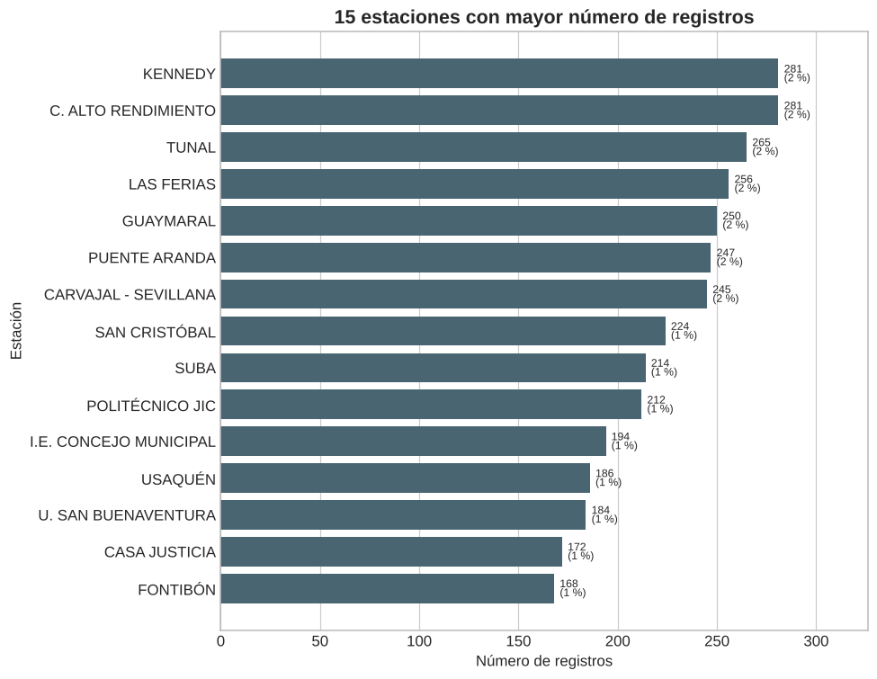
Interpretación
Las seis estaciones con más registros son de Bogotá (Centro de Alto Rendimiento, Kennedy, Tunal, Las Ferias, Guaymaral y Puente Aranda). Miden muchas variables durante todo el periodo, y por eso cada una tiene cerca del 1 % del total.
1.1.2 Distribución de registros por variable ambiental#
frecuencia_variables = df["Variable"].value_counts().rename_axis("Variable").reset_index(name="n")
tabla(frecuencia_variables, ["Variable", "Registros"])
| Variable | Registros |
|---|---|
| PM10 | 2984 |
| PM2.5 | 1984 |
| VViento | 1254 |
| DViento | 1099 |
| SO2 | 1066 |
| PLiquida | 927 |
| TAire2 | 834 |
| O3 | 827 |
| CO | 719 |
| HAire2 | 693 |
| P | 673 |
| NO2 | 644 |
| RGlobal | 600 |
| HAire10 | 361 |
| TAire10 | 334 |
| NO | 291 |
| PST | 241 |
| HAire | 75 |
| TAire | 73 |
| RUVb | 66 |
barras_h(frecuencia_variables, "Variable", "n", "Número de registros por variable ambiental", "Número de registros",
"Variable ambiental", alto=8)
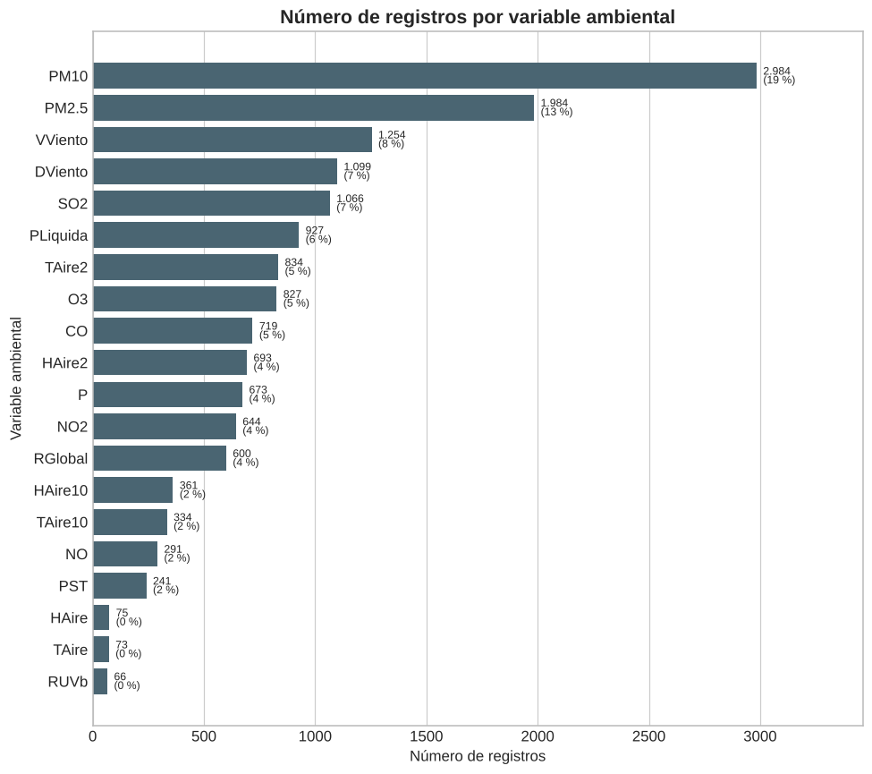
Interpretación
PM10 (19 %) y PM2.5 (13 %) suman casi un tercio de los registros, porque el material particulado es lo que más se vigila. TAire, HAire y RUVb tienen menos de 80 registros cada una, así que lo que se diga de ellas se basa en muy pocos datos.
1.2 Distribución temporal de los registros#
frecuencia_anios = df["Año"].value_counts().rename_axis("Año").reset_index(name="n").sort_values("Año")
tabla(frecuencia_anios, ["Año", "Registros"])
| Año | Registros |
|---|---|
| 2011 | 647 |
| 2012 | 809 |
| 2013 | 912 |
| 2014 | 864 |
| 2015 | 903 |
| 2016 | 966 |
| 2017 | 1354 |
| 2018 | 1155 |
| 2019 | 932 |
| 2020 | 1598 |
| 2021 | 1860 |
| 2022 | 1941 |
| 2023 | 853 |
| 2024 | 951 |
fig, ax = plt.subplots(figsize=(10, 6))
ax.bar(frecuencia_anios["Año"].astype(str), frecuencia_anios["n"], color="#4a6572")
total = frecuencia_anios["n"].sum()
for x, v in zip(frecuencia_anios["Año"].astype(str), frecuencia_anios["n"]):
ax.text(x, v + 20, f"{v:,}".replace(",", ".") + f"\n({v / total * 100:.0f} %)", ha="center", fontsize=8, linespacing=0.95)
ax.set_ylim(0, frecuencia_anios["n"].max() * 1.16)
ax.set_title("Número de registros por año", fontweight="bold"); ax.set_xlabel("Año"); ax.set_ylabel("Número de registros")
plt.xticks(rotation=45, ha="right"); ax.grid(axis="x", visible=False); plt.tight_layout(); plt.show()
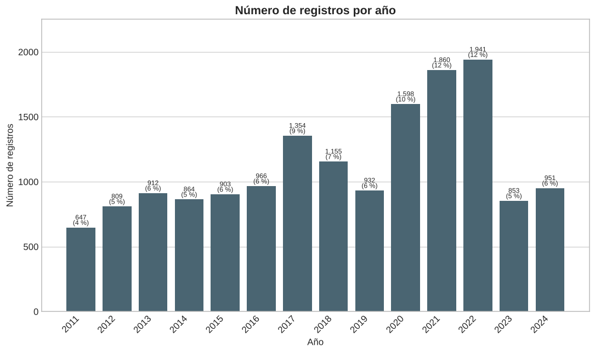
Interpretación
Los registros pasan de 647 en 2011 (4 %) a 1.941 en 2022 (12 %), o sea que la red casi se triplicó. En 2023 y 2024 bajan otra vez. Como la red cambia tanto, un promedio nacional puede subir o bajar solo porque entraron o salieron estaciones.
1.3 Estadística descriptiva y distribución de variables ambientales#
estadistica_variables = df.groupby("Variable", as_index=False).agg(
n=("Promedio", "size"), Media=("Promedio", "mean"), Mediana=("Promedio", "median"), Desv=("Promedio", "std"),
Minimo=("Promedio", "min"), Q1=("Promedio", lambda s: s.quantile(0.25)), Q3=("Promedio", lambda s: s.quantile(0.75)),
Maximo=("Promedio", "max"))
tabla(estadistica_variables, ["Variable", "n", "Media", "Mediana", "Desv. estándar", "Mínimo", "Q1", "Q3", "Máximo"])
| Variable | n | Media | Mediana | Desv. estándar | Mínimo | Q1 | Q3 | Máximo |
|---|---|---|---|---|---|---|---|---|
| CO | 719 | 811,86 | 692,96 | 487,50 | 0,80 | 484,60 | 957,20 | 3.294,80 |
| DViento | 1099 | 167,28 | 168,80 | 99,27 | 0,40 | 83,65 | 248,30 | 359,40 |
| HAire | 75 | 66,09 | 71,80 | 15,99 | 33,10 | 62,05 | 76,35 | 92,00 |
| HAire10 | 361 | 68,36 | 69,10 | 11,25 | 28,00 | 65,00 | 75,80 | 87,40 |
| HAire2 | 693 | 70,52 | 71,30 | 11,26 | 18,10 | 66,60 | 78,00 | 90,50 |
| NO | 291 | 25,00 | 20,80 | 18,91 | 0,20 | 11,75 | 34,25 | 97,20 |
| NO2 | 644 | 26,46 | 26,00 | 12,49 | 0,50 | 16,50 | 35,60 | 65,60 |
| O3 | 827 | 26,15 | 25,70 | 9,17 | 2,00 | 19,80 | 31,80 | 65,80 |
| P | 673 | 701,68 | 677,60 | 116,81 | 399,10 | 629,90 | 755,50 | 1.010,40 |
| PLiquida | 927 | 9,77 | 1,40 | 122,04 | 0,10 | 0,20 | 3,40 | 3.236,70 |
| PM10 | 2984 | 37,13 | 34,60 | 15,35 | 4,60 | 27,00 | 44,80 | 162,30 |
| PM2.5 | 1984 | 16,84 | 15,70 | 6,89 | 2,70 | 12,50 | 19,80 | 68,60 |
| PST | 241 | 74,14 | 72,00 | 25,79 | 11,10 | 56,30 | 87,40 | 162,40 |
| RGlobal | 600 | 185,64 | 178,45 | 53,87 | 48,30 | 156,88 | 206,40 | 431,30 |
| RUVb | 66 | 112,40 | 46,10 | 111,51 | 0,60 | 1,90 | 205,85 | 303,80 |
| SO2 | 1066 | 9,43 | 6,00 | 10,67 | 0,10 | 3,40 | 11,00 | 91,71 |
| TAire | 73 | 22,62 | 22,30 | 4,04 | 13,40 | 20,60 | 25,00 | 33,50 |
| TAire10 | 334 | 22,09 | 22,00 | 3,37 | 12,40 | 20,60 | 24,05 | 32,40 |
| TAire2 | 834 | 20,55 | 21,40 | 6,17 | 1,00 | 14,80 | 25,38 | 44,00 |
| VViento | 1254 | 1,37 | 1,20 | 0,79 | 0,10 | 0,90 | 1,70 | 10,20 |
Interpretación
Cada variable tiene su propia escala (la presión está cerca de 700 mmHg y el viento cerca de 1 m/s), así que solo se comparan consigo mismas.
En casi todos los contaminantes la media es mayor que la mediana, por ejemplo PM10 (37,1 y 34,6) y SO₂ (9,4 y 6,0). Unas pocas estaciones con valores altos suben el promedio. El caso más extremo es PLiquida, con una media de 9,8 mm y una mediana de 1,4 mm.
Distribución de las variables ambientales#
vars_orden = sorted(df["Variable"].unique())
def panel_boxplots(inicio, fin, subtitulo):
grupo = vars_orden[inicio:fin]
filas = int(np.ceil(len(grupo) / 2))
fig, axes = plt.subplots(filas, 2, figsize=(9, 3.2 * filas))
axes = np.array(axes).ravel()
for ax, v in zip(axes, grupo):
ax.boxplot(df.loc[df["Variable"] == v, "Promedio"].dropna(), widths=0.5)
ax.set_title(v, fontweight="bold", fontsize=12); ax.set_xticks([]); ax.set_ylabel("Valor promedio"); ax.grid(axis="x", visible=False)
for ax in axes[len(grupo):]: ax.axis("off")
fig.suptitle("Distribución de las variables ambientales\n" + subtitulo, fontweight="bold", fontsize=15)
plt.tight_layout(); plt.show()
panel_boxplots(0, 5, "Variables ambientales 1-5")
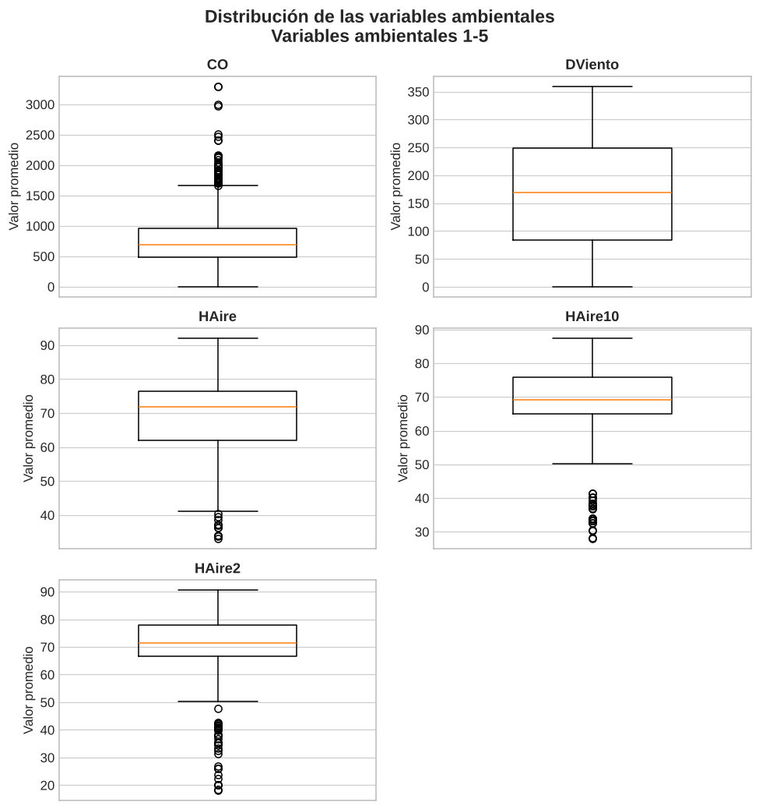
panel_boxplots(5, 10, "Variables ambientales 6-10")
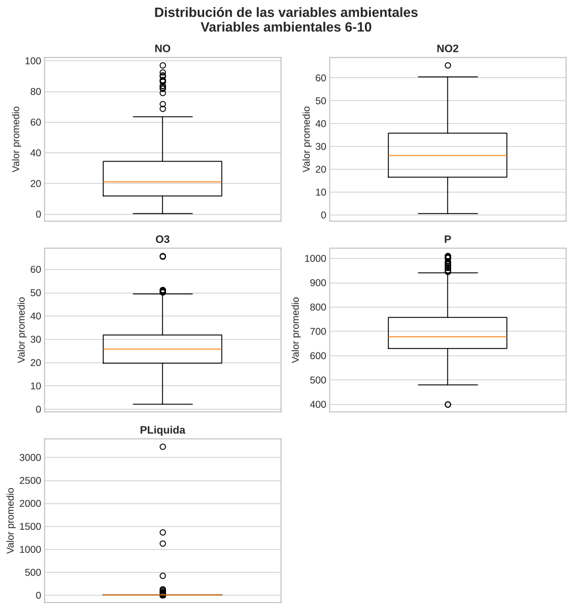
panel_boxplots(10, 15, "Variables ambientales 11-15")
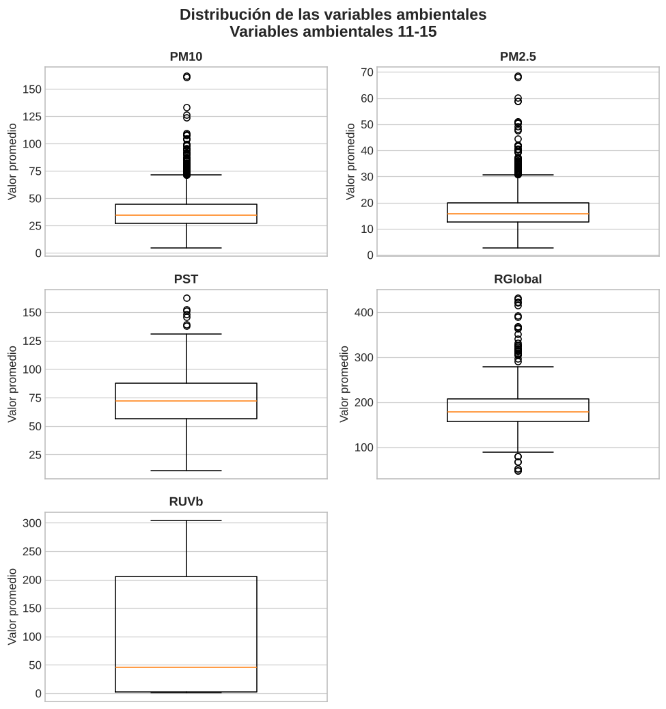
panel_boxplots(15, 20, "Variables ambientales 16-20")
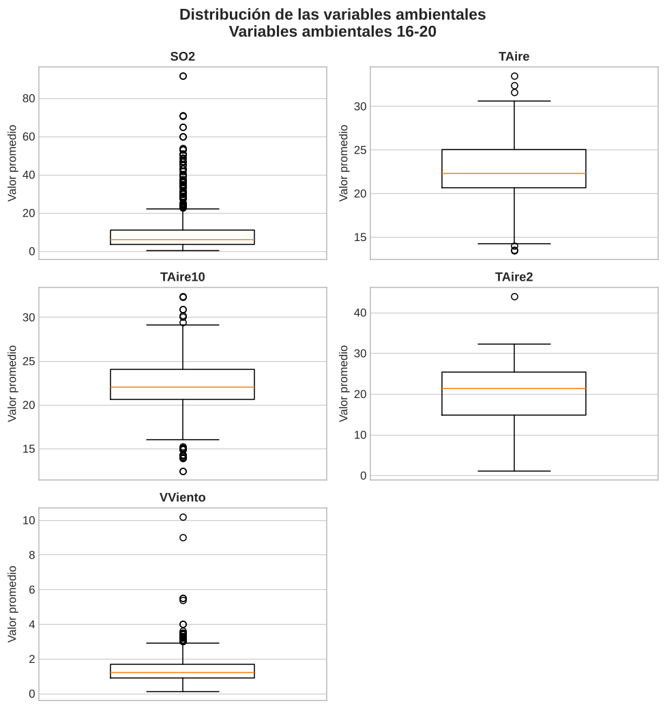
Interpretación
En la mayoría de las variables los puntos sueltos están por encima de la caja, lo que confirma la cola hacia la derecha. La caja de RUVb es muy grande porque mezcla dos escalas de medición.
Identificación de valores atípicos#
Se usa el criterio de Tukey: es atípico todo valor menor que Q1 − 1,5·IQR o mayor que Q3 + 1,5·IQR.
outliers_variables = df.groupby("Variable", as_index=False).agg(Q1=("Promedio", lambda s: s.quantile(0.25)), Q3=("Promedio", lambda s: s.quantile(0.75)))
outliers_variables["IQR"] = outliers_variables["Q3"] - outliers_variables["Q1"]
outliers_variables["Limite_inferior"] = outliers_variables["Q1"] - 1.5 * outliers_variables["IQR"]
outliers_variables["Limite_superior"] = outliers_variables["Q3"] + 1.5 * outliers_variables["IQR"]
Resumen de valores atípicos#
def contar_atipicos(s):
q1, q3 = s.quantile(0.25), s.quantile(0.75)
return ((s < q1 - 1.5 * (q3 - q1)) | (s > q3 + 1.5 * (q3 - q1))).sum()
outliers_variables["Atipicos"] = outliers_variables["Variable"].map(df.groupby("Variable")["Promedio"].apply(contar_atipicos))
outliers_variables["Porcentaje"] = outliers_variables["Atipicos"] / outliers_variables["Variable"].map(df["Variable"].value_counts()) * 100
print("Total de registros atípicos:", outliers_variables["Atipicos"].sum(), "de", len(df))
tabla(outliers_variables.sort_values("Porcentaje", ascending=False),
["Variable", "Q1", "Q3", "IQR", "Límite inferior", "Límite superior", "Atípicos", "% atípicos"])
Total de registros atípicos: 638 de 15745
| Variable | Q1 | Q3 | IQR | Límite inferior | Límite superior | Atípicos | % atípicos |
|---|---|---|---|---|---|---|---|
| HAire | 62,05 | 76,35 | 14,30 | 40,60 | 97,80 | 12 | 16,00 |
| SO2 | 3,40 | 11,00 | 7,60 | -8,00 | 22,40 | 93 | 8,72 |
| CO | 484,60 | 957,20 | 472,60 | -224,31 | 1.666,11 | 62 | 8,62 |
| TAire10 | 20,60 | 24,05 | 3,45 | 15,43 | 29,23 | 28 | 8,38 |
| TAire | 20,60 | 25,00 | 4,40 | 14,00 | 31,60 | 6 | 8,22 |
| HAire10 | 65,00 | 75,80 | 10,80 | 48,80 | 92,00 | 25 | 6,93 |
| RGlobal | 156,88 | 206,40 | 49,53 | 82,59 | 280,69 | 40 | 6,67 |
| PLiquida | 0,20 | 3,40 | 3,20 | -4,60 | 8,20 | 61 | 6,58 |
| P | 629,90 | 755,50 | 125,60 | 441,50 | 943,90 | 44 | 6,54 |
| HAire2 | 66,60 | 78,00 | 11,40 | 49,50 | 95,10 | 35 | 5,05 |
| NO | 11,75 | 34,25 | 22,50 | -22,00 | 68,00 | 14 | 4,81 |
| PM2.5 | 12,50 | 19,80 | 7,30 | 1,55 | 30,75 | 74 | 3,73 |
| PM10 | 27,00 | 44,80 | 17,80 | 0,30 | 71,50 | 91 | 3,05 |
| PST | 56,30 | 87,40 | 31,10 | 9,65 | 134,05 | 7 | 2,90 |
| VViento | 0,90 | 1,70 | 0,80 | -0,30 | 2,90 | 35 | 2,79 |
| O3 | 19,80 | 31,80 | 12,00 | 1,80 | 49,80 | 9 | 1,09 |
| NO2 | 16,50 | 35,60 | 19,10 | -12,15 | 64,25 | 1 | 0,16 |
| TAire2 | 14,80 | 25,38 | 10,57 | -1,06 | 41,24 | 1 | 0,12 |
| DViento | 83,65 | 248,30 | 164,65 | -163,33 | 495,28 | 0 | 0,00 |
| RUVb | 1,90 | 205,85 | 203,95 | -304,03 | 511,78 | 0 | 0,00 |
Interpretación
En total hay 638 registros atípicos, el 4,1 % del dataset. La variable con más atípicos en proporción es HAire, con 12 de 75 registros (16 %) fuera de los límites de 40,6 y 97,8 %. Le siguen el SO₂, con 93 registros (8,7 %) por encima de 22,4 µg/m³, y el CO, con 62 registros (8,6 %) por encima de 1.666,1.
En el material particulado el límite superior es 71,5 µg/m³ para el PM10 (91 atípicos, 3,0 %) y 30,75 µg/m³ para el PM2.5 (74 atípicos, 3,7 %). El NO₂ solo tiene 1 atípico por encima de 64,25 µg/m³, y DViento y RUVb no tienen ninguno porque su rango intercuartílico es muy amplio (164,65 y 203,95).
Cuando el límite inferior es negativo, como en el CO (−224,31), el NO₂ (−12,15) o el SO₂ (−8,0), no puede haber atípicos bajos porque esas variables no toman valores negativos.
1.4 Representatividad temporal de los datos#
representatividad_variables = df.groupby("Variable", as_index=False).agg(Media=("Representatividad Temporal", "mean"), Mediana=("Representatividad Temporal", "median"), Minimo=("Representatividad Temporal", "min"), Maximo=("Representatividad Temporal", "max")).sort_values("Media", ascending=False)
tabla(representatividad_variables)
| Variable | Media | Mediana | Minimo | Maximo |
|---|---|---|---|---|
| P | 75,37 | 90,00 | 0,00 | 100,00 |
| TAire10 | 73,99 | 92,00 | 0,00 | 100,00 |
| RUVb | 73,74 | 89,50 | 6,00 | 100,00 |
| CO | 72,59 | 86,00 | 0,00 | 100,00 |
| RGlobal | 71,56 | 87,00 | 0,00 | 100,00 |
| PLiquida | 69,80 | 89,00 | 0,00 | 100,00 |
| DViento | 68,59 | 86,00 | 0,00 | 167,00 |
| HAire10 | 68,13 | 87,00 | 0,00 | 100,00 |
| O3 | 67,62 | 80,00 | 0,00 | 100,00 |
| NO | 66,92 | 85,00 | 0,00 | 100,00 |
| PM2.5 | 66,84 | 81,00 | 0,00 | 103,00 |
| PST | 66,59 | 79,00 | 0,00 | 101,00 |
| NO2 | 66,13 | 77,00 | 0,00 | 100,00 |
| PM10 | 65,97 | 79,00 | 0,00 | 115,00 |
| TAire2 | 65,57 | 82,00 | 0,00 | 100,00 |
| HAire2 | 64,13 | 79,00 | 0,00 | 100,00 |
| SO2 | 63,47 | 72,00 | 1,00 | 100,00 |
| VViento | 62,86 | 79,00 | 0,00 | 100,00 |
| HAire | 27,49 | 15,00 | 3,00 | 99,00 |
| TAire | 23,93 | 14,50 | 3,00 | 90,00 |
barras_h(representatividad_variables, "Variable", "Media", "Representatividad temporal promedio por variable",
"Representatividad temporal (%)", "Variable ambiental", alto=8, porcentaje=False, dec=1)
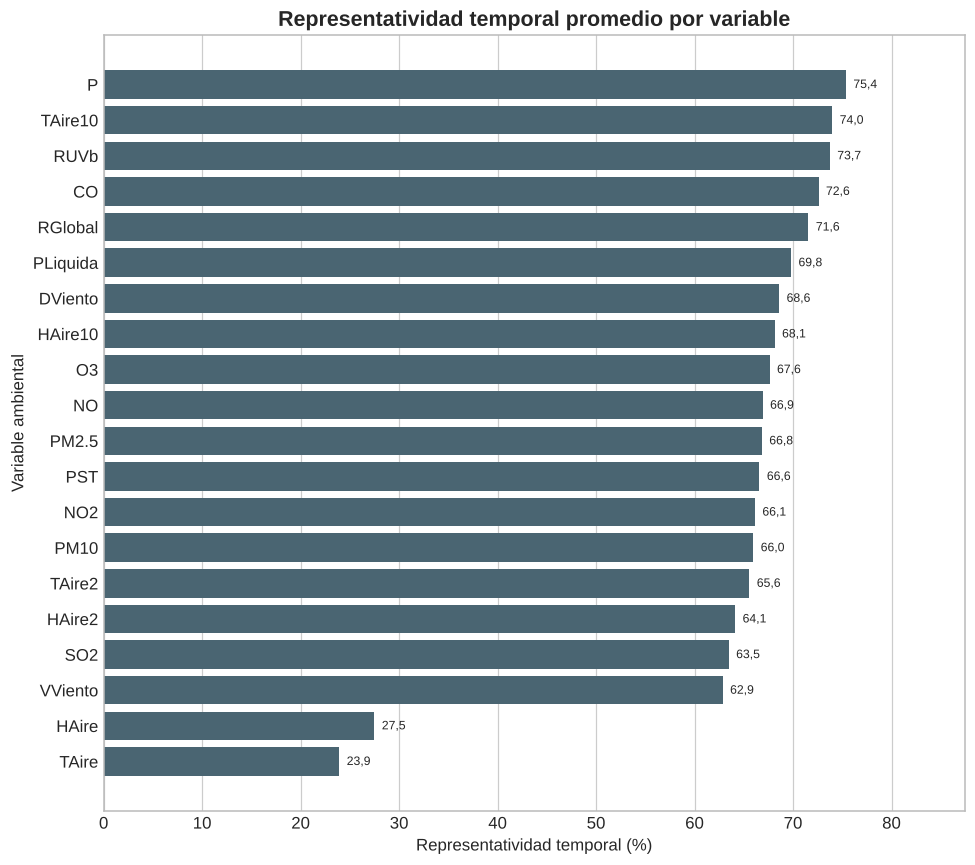
Interpretación
La mayoría de variables tiene entre 63 % y 75 % de representatividad, o sea que en un registro normal falta cerca de un tercio del año. TAire (24 %) y HAire (27 %) son las más bajas.
fuera_de_rango = df[df["Representatividad Temporal"] > 100]
tabla(pd.DataFrame({"Registros con más de 100 %": [len(fuera_de_rango)],
"Máximo reportado (%)": [df["Representatividad Temporal"].max()]}), decimales=1)
| Registros con más de 100 % | Máximo reportado (%) |
|---|---|
| 12 | 167,0 |
Precaución
Una representatividad de más de 100 % no es posible, porque no se puede medir más que el año completo. Son errores de captura. Se dejan anotados pero no se corrigen porque no se sabe cuál es el valor real.
1.5 Distribución geográfica de las estaciones#
ubicacion_estaciones = (df.groupby("Estación").agg(Latitud=("Latitud", "mean"), Longitud=("Longitud", "mean"),
Municipio=("Nombre del Municipio", "first"), Registros=("Variable", "size"))
.reset_index())
print("Estaciones:", len(ubicacion_estaciones))
mapa_satelital(ubicacion_estaciones["Latitud"], ubicacion_estaciones["Longitud"], 8,
ubicacion_estaciones["Estación"] + " (" + ubicacion_estaciones["Municipio"] + ")",
"Ubicación de las estaciones de monitoreo", color="#7fdcff")
Estaciones: 654
Interpretación
Las estaciones se concentran en la región Andina, sobre todo en Bogotá, el Valle de Aburrá y Cali. En el Caribe hay estaciones en Barranquilla, Santa Marta, Cartagena y en las zonas carboníferas del Cesar y La Guajira. La Amazonía, la Orinoquía y el Pacífico casi no tienen estaciones.
Distribución por tipo de estación#
frecuencia_tipo_estacion = df["Tipo de Estación"].value_counts().rename_axis("Tipo de Estación").reset_index(name="n")
frecuencia_tipo_estacion["Porcentaje"] = frecuencia_tipo_estacion["n"] / frecuencia_tipo_estacion["n"].sum() * 100
tabla(frecuencia_tipo_estacion, ["Tipo de estación", "Registros", "Porcentaje (%)"], decimales=1)
| Tipo de estación | Registros | Porcentaje (%) |
|---|---|---|
| Fija | 14.184 | 90,1 |
| Indicativa | 1560 | 9,9 |
barras_h(frecuencia_tipo_estacion, "Tipo de Estación", "n", "Distribución de registros por tipo de estación",
"Número de registros", "Tipo de estación", alto=3.5)
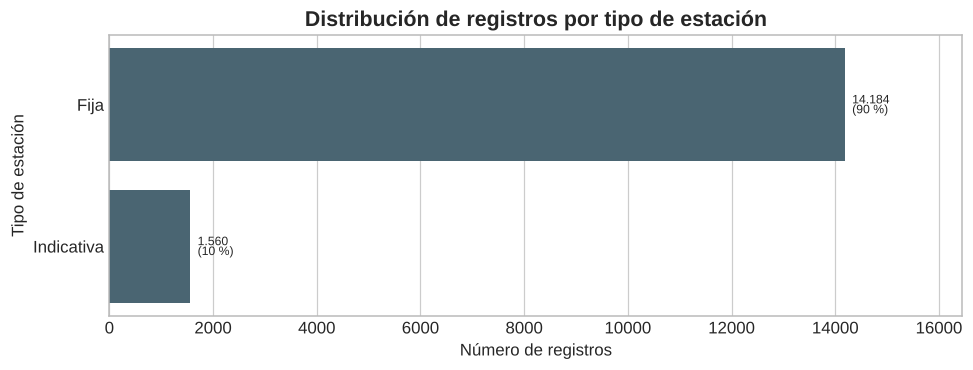
Interpretación
El 90 % de los registros (14.184) viene de estaciones fijas, que miden todo el año. Las indicativas son campañas temporales y aportan el 10 % (1.560).
Distribución por departamento#
frecuencia_departamentos = df["Nombre del Departamento"].value_counts().rename_axis("Nombre del Departamento").reset_index(name="n")
tabla(frecuencia_departamentos, ["Departamento", "Número de registros"])
| Departamento | Número de registros |
|---|---|
| ANTIOQUIA | 4243 |
| BOGOTÁ, D.C. | 2143 |
| VALLE DEL CAUCA | 1434 |
| SANTANDER | 940 |
| BOGOTA, D.C. | 840 |
| CUNDINAMARCA | 757 |
| CESAR | 524 |
| BOYACÁ | 515 |
| MAGDALENA | 493 |
| Bogotá, D.C. | 410 |
| LA GUAJIRA | 382 |
| Cundinamarca | 367 |
| ATLÁNTICO | 327 |
| Antioquia | 322 |
| BOYACA | 282 |
| META | 244 |
| CAUCA | 145 |
| Valle del Cauca | 145 |
| Boyacá | 125 |
| BOLÍVAR | 114 |
| CALDAS | 92 |
| ATLANTICO | 84 |
| RISARALDA | 81 |
| Bolívar | 81 |
| Santander | 66 |
| CÓRDOBA | 63 |
| Magdalena | 63 |
| NORTE DE SANTANDER | 60 |
| TOLIMA | 52 |
| Cesar | 47 |
| Caldas | 44 |
| Atlántico | 30 |
| CORDOBA | 28 |
| HUILA | 25 |
| ARAUCA | 25 |
| Risaralda | 21 |
| La Guajira | 20 |
| Norte de Santander | 19 |
| Meta | 18 |
| QUINDÍO | 15 |
| Córdoba | 12 |
| NARIÑO | 11 |
| CASANARE | 11 |
| CHOCÓ | 7 |
| Cauca | 5 |
| QUINDIO | 4 |
| Huila | 4 |
| Tolima | 3 |
| Quindío | 2 |
departamentos_1 = frecuencia_departamentos.iloc[0:24]
barras_h(departamentos_1, "Nombre del Departamento", "n", "Registros por departamento", "Número de registros", "Departamento",
subtitulo="Nombres tal como vienen en el archivo, 1 a 24", alto=9, tam=7, total=len(df))
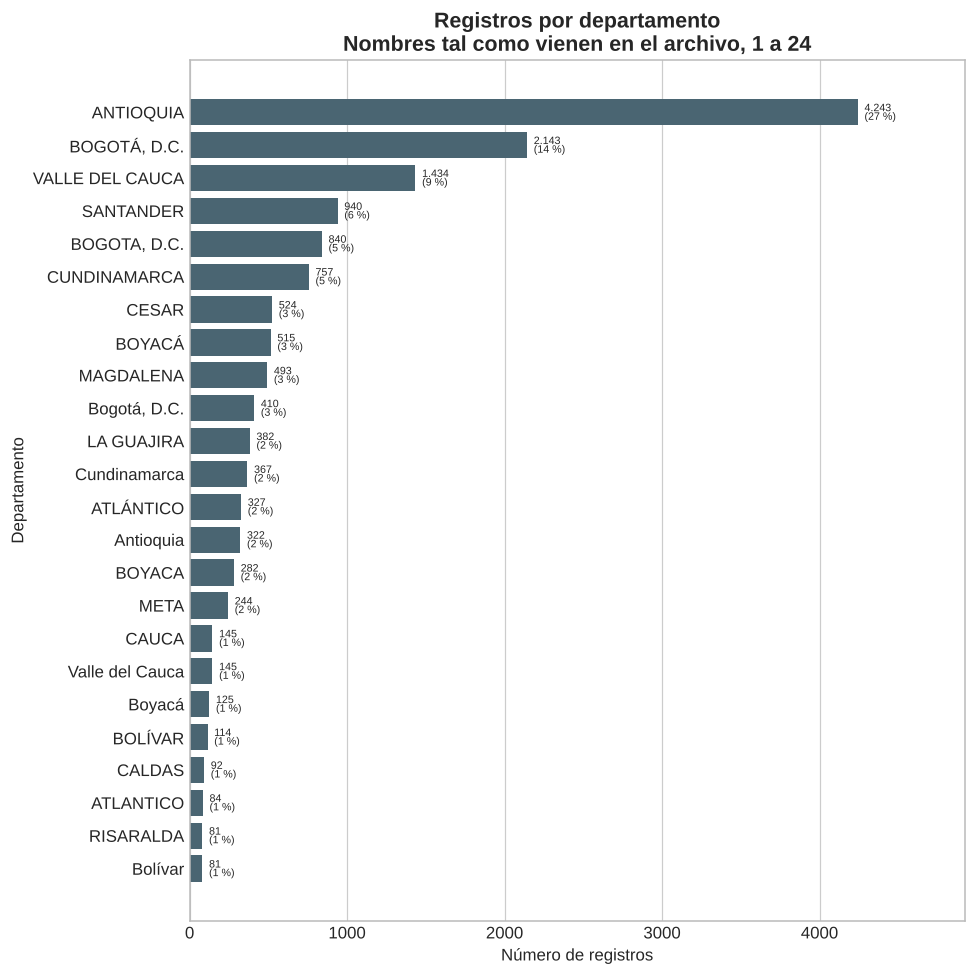
departamentos_2 = frecuencia_departamentos.iloc[24:49]
barras_h(departamentos_2, "Nombre del Departamento", "n", "Registros por departamento", "Número de registros", "Departamento",
subtitulo="Nombres tal como vienen en el archivo, 25 a 49", alto=9, tam=7, total=len(df))
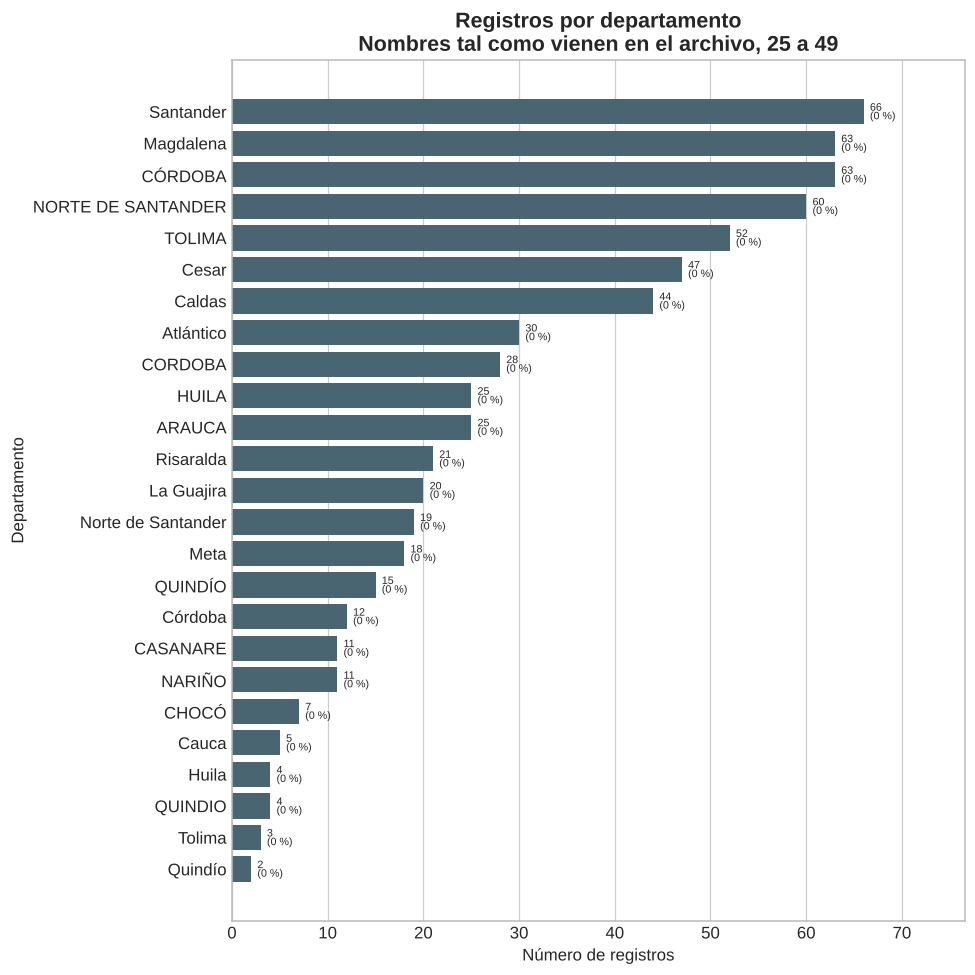
Precaución
En la tabla el mismo departamento aparece escrito de varias formas, por ejemplo BOGOTÁ, D.C., BOGOTA, D.C. y Bogotá, D.C., o ANTIOQUIA y Antioquia. Por eso salen 49 departamentos. Abajo se normalizan los nombres (sin tildes y en mayúsculas).
import unicodedata
def normalizar(t):
t = unicodedata.normalize("NFKD", str(t)).encode("ascii", "ignore").decode()
return " ".join(t.upper().split())
df["Departamento_norm"] = df["Nombre del Departamento"].map(normalizar)
df["Municipio_norm"] = df["Nombre del Municipio"].map(normalizar)
tabla(pd.DataFrame({"Columna": ["Departamento", "Municipio"],
"Nombres en el archivo": [df["Nombre del Departamento"].nunique(), df["Nombre del Municipio"].nunique()],
"Nombres normalizados": [df["Departamento_norm"].nunique(), df["Municipio_norm"].nunique()]}))
| Columna | Nombres en el archivo | Nombres normalizados |
|---|---|---|
| Departamento | 49 | 24 |
| Municipio | 339 | 193 |
deptos_norm = df["Departamento_norm"].value_counts().rename_axis("Departamento").reset_index(name="n")
barras_h(deptos_norm, "Departamento", "n", "Registros por departamento", "Número de registros", "Departamento",
subtitulo="Nombres normalizados", alto=8.5, tam=7, total=len(df))
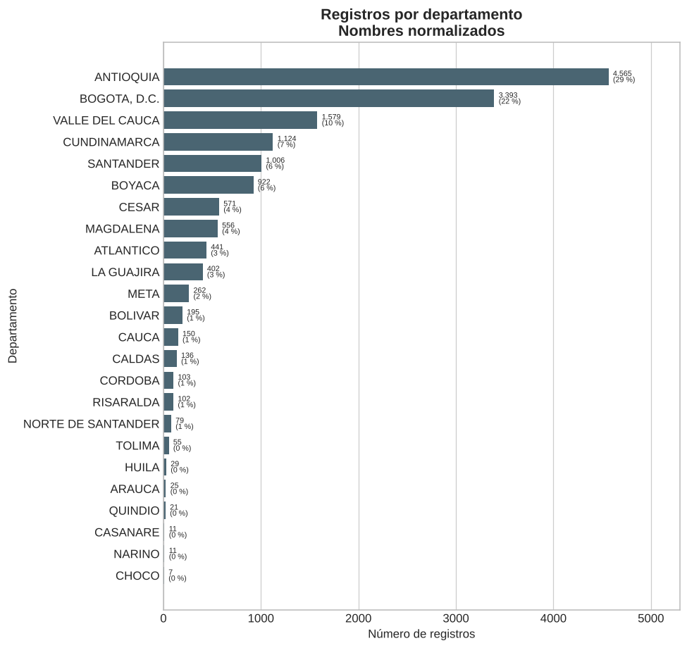
Interpretación
Al normalizar quedan 24 departamentos y 193 municipios. Antioquia y Bogotá tienen la mitad de los registros, y después vienen Valle del Cauca y Cundinamarca. La Amazonía, la Orinoquía y casi todo el Pacífico no tienen monitoreo, así que los resultados nacionales representan sobre todo a las ciudades andinas.
Distribución por municipio#
municipios = (df.groupby("Municipio_norm")
.agg(Departamento=("Departamento_norm", "first"), Registros=("Variable", "size"), Estaciones=("Estación", "nunique"),
Latitud=("Latitud", "mean"), Longitud=("Longitud", "mean"))
.reset_index().sort_values("Registros", ascending=False))
mapa_satelital(municipios["Latitud"], municipios["Longitud"], (municipios["Registros"] ** 0.5) * 0.9 + 5,
municipios["Municipio_norm"] + ": " + municipios["Registros"].astype(str) + " registros, " +
municipios["Estaciones"].astype(str) + " estaciones",
"Registros por municipio (el tamaño del punto es proporcional al número de registros)")
Interpretación
El mapa muestra lo mismo que la tabla de departamentos pero a nivel de municipio. Bogotá es el punto más grande, con 3.397 registros, seguido por Medellín (1.487) y Cali (1.036). Alrededor de Medellín aparecen varios puntos medianos (Itagüí, Girardota, Bello, Sabaneta), porque el Valle de Aburrá tiene una red densa.
barras_h(municipios.head(20), "Municipio_norm", "Registros", "20 municipios con más registros", "Número de registros",
"Municipio", subtitulo="Nombres normalizados", alto=8, total=len(df))
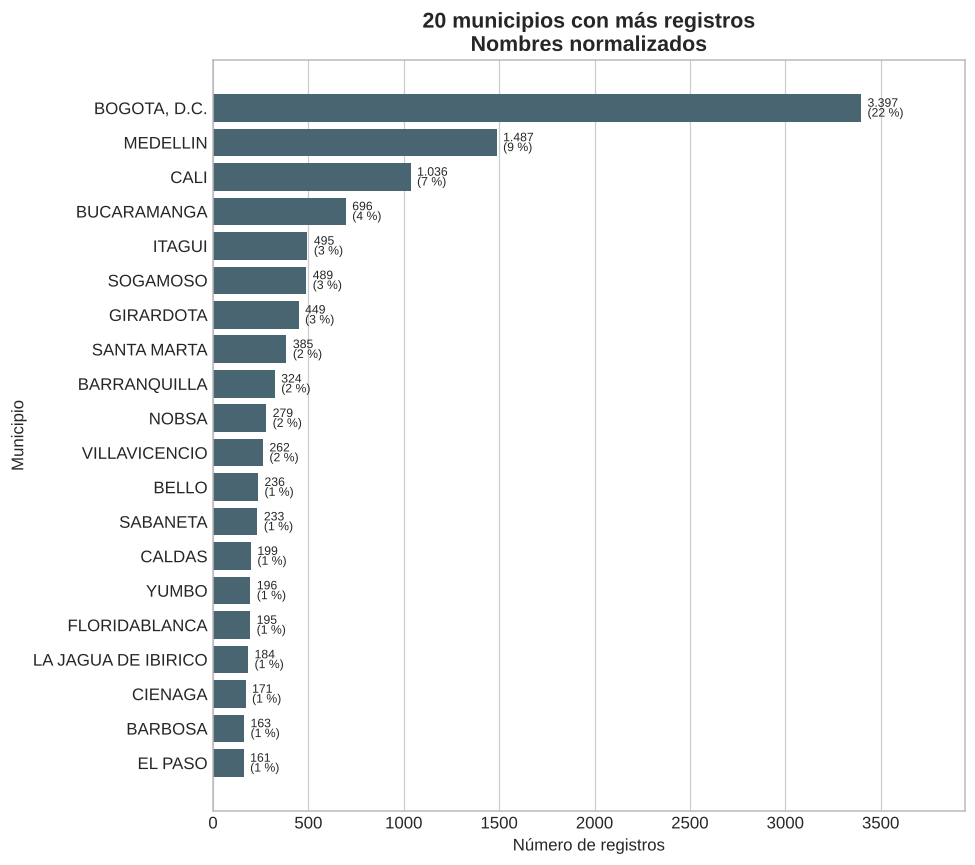
Interpretación
Los 20 municipios con más registros son capitales con redes grandes (Bogotá, Medellín, Cali, Bucaramanga, Santa Marta) y municipios industriales o mineros como Sogamoso y Nobsa (cemento y acero) o La Jagua de Ibirico (carbón), donde se vigilan fuentes de emisión puntuales.
1.6 Análisis específico de contaminantes#
Para cada contaminante se muestra la estadística descriptiva y la distribución por región. Las regiones se definen por la latitud de la estación: sur (menos de 4°), centro (4° a 6°, Bogotá y Cundinamarca), centro-norte (6° a 8°, Antioquia, Santander y Boyacá) y Caribe (más de 8°).
def estadisticos(serie, con_media=True):
nombres = ["Mínimo", "Primer cuartil", "Mediana", "Media", "Tercer cuartil", "Máximo"]
valores = [serie.min(), serie.quantile(0.25), serie.median(), serie.mean(), serie.quantile(0.75), serie.max()]
if not con_media: nombres, valores = ["Mínimo", "Primer cuartil", "Mediana", "Máximo"], [serie.min(), serie.quantile(0.25), serie.median(), serie.max()]
return pd.DataFrame({"Estadistico": nombres, "Valor": valores})
def promedio_anual(d, nombre): return d.groupby("Año", as_index=False).agg(**{nombre: ("Promedio", "mean"), "Registros": ("Promedio", "size")}).sort_values("Año").reset_index(drop=True)
def grafico_anual(d, col, titulo, subtitulo, ylab, anios=None):
fig, ax = plt.subplots()
ax.plot(d["Año"], d[col], linewidth=1.2, marker="o", markersize=6, color="black")
for x, y in zip(d["Año"], d[col]): ax.text(x, y + (d[col].max() - d[col].min() + 1) * 0.03, f"{y:.1f}", ha="center", fontsize=9)
ax.set_xticks(list(anios) if anios is not None else sorted(d["Año"].unique()))
ax.set_ylim(top=d[col].max() * 1.08)
ax.set_title(titulo + "\n" + subtitulo, fontweight="bold"); ax.set_xlabel("Año"); ax.set_ylabel(ylab)
plt.xticks(rotation=45, ha="right")
plt.tight_layout(); plt.show()
def cambio_porcentual(d, col, a1=2011, a2=2024):
s = d.set_index("Año")[col]
if a1 not in s.index or a2 not in s.index: return pd.DataFrame({"Periodo": ["N/A"], "Promedio_2011": [np.nan], "Promedio_2024": [np.nan], "Cambio_porcentual": [np.nan]})
v1, v2 = s.loc[a1], s.loc[a2]
return pd.DataFrame({"Periodo": [f"{a1}-{a2}"], "Promedio_2011": [v1], "Promedio_2024": [v2], "Cambio_porcentual": [(v2 - v1) / v1 * 100]})
# Distribución por región (según la latitud de la estación)
REGIONES = ["Sur (< 4°)", "Centro (4–6°)", "Centro-norte (6–8°)", "Caribe (> 8°)"]
df["Región"] = pd.cut(df["Latitud"], [-5, 4, 6, 8, 15], labels=REGIONES)
def resumen_region(d):
return (d.groupby("Región", observed=True)["Promedio"]
.agg(Registros="size", Mediana="median", Q1=lambda s: s.quantile(.25), Q3=lambda s: s.quantile(.75),
Maximo="max").reset_index())
def grafico_region(d, nombre, unidad, norma=None):
grupos = [g for g in REGIONES if (d["Región"] == g).any()]
datos = [d.loc[d["Región"] == g, "Promedio"].dropna() for g in grupos]
fig, ax = plt.subplots(figsize=(9, 5.5))
ax.boxplot(datos, widths=0.5)
ax.set_xticks(range(1, len(grupos) + 1), [f"{g}\nn = {len(x)}" for g, x in zip(grupos, datos)])
if norma:
ax.axhline(norma[0], ls="--", color="black", lw=1, label=f"Norma anual ({norma[0]})")
ax.axhline(norma[1], ls=":", color="gray", lw=1.2, label=f"Meta 2030 ({norma[1]})")
ax.legend(loc="upper right")
ax.set_title(f"Distribución de {nombre} por región", fontweight="bold")
ax.set_ylabel(f"Promedio ({unidad})"); ax.grid(axis="x", visible=False)
plt.tight_layout(); plt.show()
PM10#
pm10 = df[df["Variable"] == "PM10"].copy()
print("Registros de PM10:", len(pm10))
estadistica_pm10 = estadisticos(pm10["Promedio"])
tabla(estadistica_pm10, ["Estadístico", "Valor"])
Registros de PM10: 2984
| Estadístico | Valor |
|---|---|
| Mínimo | 4,60 |
| Primer cuartil | 27,00 |
| Mediana | 34,60 |
| Media | 37,13 |
| Tercer cuartil | 44,80 |
| Máximo | 162,30 |
Interpretación
El PM10 tiene 2.984 registros. La media (37,1 µg/m³) es algo mayor que la mediana (34,6 µg/m³), así que la distribución tiene cola hacia la derecha. El máximo es 162,3 µg/m³.
pm10_anual = promedio_anual(pm10, "Promedio_PM10") # se usa para el cambio entre 2011 y 2024
tabla(resumen_region(pm10), ["Región", "Registros", "Mediana", "Q1", "Q3", "Máximo"])
| Región | Registros | Mediana | Q1 | Q3 | Máximo |
|---|---|---|---|---|---|
| Sur (< 4°) | 349 | 36,40 | 28,50 | 47,70 | 133,40 |
| Centro (4–6°) | 1227 | 32,20 | 25,60 | 42,75 | 162,30 |
| Centro-norte (6–8°) | 730 | 37,40 | 27,79 | 47,60 | 99,80 |
| Caribe (> 8°) | 678 | 36,30 | 28,90 | 42,88 | 92,00 |
grafico_region(pm10, "PM10", "µg/m³", norma=(50, 30))
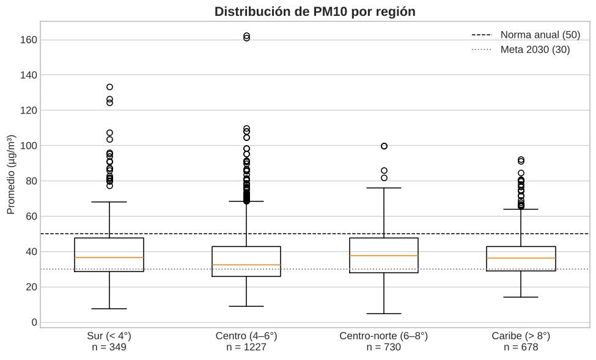
Interpretación
Las medianas de PM10 son parecidas entre regiones, entre 32,2 µg/m³ en el centro (Bogotá y alrededores) y 37,4 µg/m³ en el centro-norte (Valle de Aburrá). En todas las regiones la mediana está por debajo de la norma anual de 50 µg/m³, pero por encima de la meta de 2030 (30 µg/m³).
tabla_cambio_pm10 = cambio_porcentual(pm10_anual, "Promedio_PM10")
tabla(tabla_cambio_pm10, ["Periodo", "Promedio 2011", "Promedio 2024", "Cambio (%)"])
| Periodo | Promedio 2011 | Promedio 2024 | Cambio (%) |
|---|---|---|---|
| 2011-2024 | 42,66 | 30,83 | -27,75 |
Interpretación
Entre 2011 y 2024 el promedio nacional de PM10 bajó 27,75 %.
PM2.5#
pm25 = df[df["Variable"] == "PM2.5"].copy()
print("Registros de PM2.5:", len(pm25))
estadistica_pm25 = estadisticos(pm25["Promedio"])
tabla(estadistica_pm25, ["Estadístico", "Valor"])
Registros de PM2.5: 1984
| Estadístico | Valor |
|---|---|
| Mínimo | 2,70 |
| Primer cuartil | 12,50 |
| Mediana | 15,70 |
| Media | 16,84 |
| Tercer cuartil | 19,80 |
| Máximo | 68,60 |
Interpretación
El PM2.5 tiene 1.984 registros y valores más bajos que el PM10, porque es la fracción fina del material particulado. La media (16,8 µg/m³) y la mediana (15,7 µg/m³) son cercanas.
pm25_anual = promedio_anual(pm25, "Promedio_PM25") # se usa para el cambio entre 2011 y 2024
tabla(resumen_region(pm25), ["Región", "Registros", "Mediana", "Q1", "Q3", "Máximo"])
| Región | Registros | Mediana | Q1 | Q3 | Máximo |
|---|---|---|---|---|---|
| Sur (< 4°) | 222 | 14,64 | 11,60 | 18,79 | 30,00 |
| Centro (4–6°) | 807 | 14,90 | 12,29 | 18,40 | 68,60 |
| Centro-norte (6–8°) | 702 | 17,78 | 14,10 | 22,48 | 51,10 |
| Caribe (> 8°) | 253 | 13,66 | 10,40 | 16,80 | 40,30 |
grafico_region(pm25, "PM2.5", "µg/m³", norma=(25, 15))
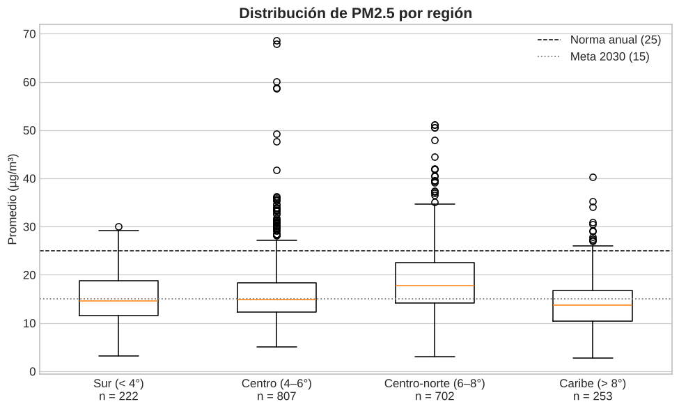
Interpretación
El centro-norte tiene la mediana más alta de PM2.5 (17,8 µg/m³). Ahí está el Valle de Aburrá, donde las montañas encierran los contaminantes. El Caribe tiene la más baja (13,7 µg/m³). Todas las medianas están por debajo de la norma anual de 25 µg/m³, y la del centro-norte es la única que pasa la meta de 2030 (15 µg/m³).
tabla_cambio_pm25 = cambio_porcentual(pm25_anual, "Promedio_PM25")
tabla(tabla_cambio_pm25, ["Periodo", "Promedio 2011", "Promedio 2024", "Cambio (%)"])
| Periodo | Promedio 2011 | Promedio 2024 | Cambio (%) |
|---|---|---|---|
| 2011-2024 | 21,46 | 14,73 | -31,35 |
Interpretación
Entre 2011 y 2024 el promedio nacional de PM2.5 bajó 31,35 %.
NO₂#
no2 = df[df["Variable"] == "NO2"].copy()
print("Registros de NO2:", len(no2))
estadistica_no2 = estadisticos(no2["Promedio"])
tabla(estadistica_no2, ["Estadístico", "Valor"])
Registros de NO2: 644
| Estadístico | Valor |
|---|---|
| Mínimo | 0,50 |
| Primer cuartil | 16,50 |
| Mediana | 26,00 |
| Media | 26,46 |
| Tercer cuartil | 35,60 |
| Máximo | 65,60 |
Interpretación
El NO₂ tiene 644 registros. La media (26,5 µg/m³) y la mediana (26,0 µg/m³) son casi iguales.
no2_anual = promedio_anual(no2, "Promedio_NO2") # se usa para el cambio entre 2011 y 2024
tabla(resumen_region(no2), ["Región", "Registros", "Mediana", "Q1", "Q3", "Máximo"])
| Región | Registros | Mediana | Q1 | Q3 | Máximo |
|---|---|---|---|---|---|
| Sur (< 4°) | 29 | 13,40 | 9,50 | 15,40 | 45,60 |
| Centro (4–6°) | 398 | 26,35 | 17,30 | 35,08 | 60,40 |
| Centro-norte (6–8°) | 192 | 29,95 | 19,93 | 37,12 | 65,60 |
| Caribe (> 8°) | 25 | 10,80 | 8,50 | 15,80 | 33,20 |
grafico_region(no2, "NO₂", "µg/m³", norma=(60, 40))
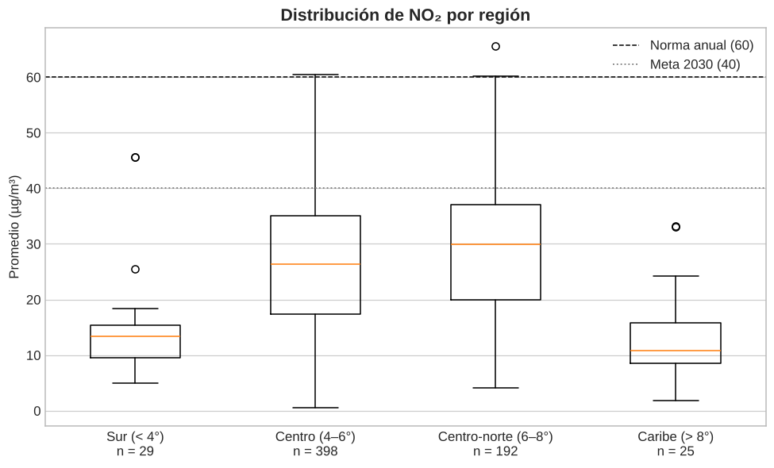
Interpretación
El NO₂ es el contaminante con más diferencia entre regiones. En el centro y el centro-norte la mediana está entre 26,4 y 30,0 µg/m³, más del doble que en el sur (13,4) y el Caribe (10,8). El NO₂ viene sobre todo del tráfico vehicular, que es mayor en las ciudades andinas. El sur y el Caribe tienen pocos registros (29 y 25). Todos los valores están lejos de la norma anual de 60 µg/m³.
tabla_cambio_no2 = cambio_porcentual(no2_anual, "Promedio_NO2")
tabla(tabla_cambio_no2, ["Periodo", "Promedio 2011", "Promedio 2024", "Cambio (%)"])
| Periodo | Promedio 2011 | Promedio 2024 | Cambio (%) |
|---|---|---|---|
| 2011-2024 | 36,28 | 26,88 | -25,90 |
Interpretación
Entre 2011 y 2024 el promedio nacional de NO₂ bajó 25,9 %.
O₃#
o3 = df[df["Variable"] == "O3"].copy()
print("Registros de O3:", len(o3))
estadistica_o3 = estadisticos(o3["Promedio"])
tabla(estadistica_o3, ["Estadístico", "Valor"])
Registros de O3: 827
| Estadístico | Valor |
|---|---|
| Mínimo | 2,00 |
| Primer cuartil | 19,80 |
| Mediana | 25,70 |
| Media | 26,15 |
| Tercer cuartil | 31,80 |
| Máximo | 65,80 |
Interpretación
El ozono tiene 827 registros, con media y mediana cercanas (26,2 y 25,7 µg/m³).
o3_anual = promedio_anual(o3, "Promedio_O3") # se usa para el cambio entre 2011 y 2024
tabla(resumen_region(o3), ["Región", "Registros", "Mediana", "Q1", "Q3", "Máximo"])
| Región | Registros | Mediana | Q1 | Q3 | Máximo |
|---|---|---|---|---|---|
| Sur (< 4°) | 120 | 28,60 | 18,82 | 36,47 | 65,80 |
| Centro (4–6°) | 355 | 22,40 | 17,60 | 26,75 | 50,40 |
| Centro-norte (6–8°) | 273 | 28,80 | 24,10 | 33,20 | 48,70 |
| Caribe (> 8°) | 79 | 30,50 | 24,15 | 39,00 | 51,01 |
grafico_region(o3, "O₃", "µg/m³")
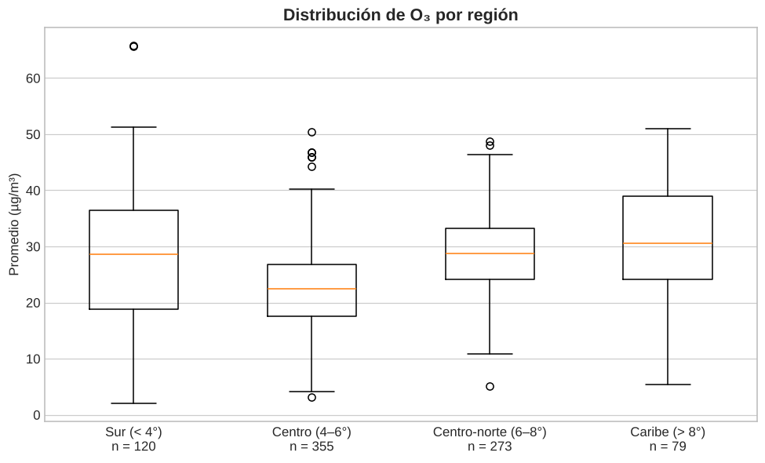
Interpretación
El ozono es más alto en el Caribe (mediana de 30,5 µg/m³) y más bajo en el centro (22,4 µg/m³). El ozono se forma con la luz solar, y el Caribe es la región con más radiación (ver RGlobal más abajo).
tabla_cambio_o3 = cambio_porcentual(o3_anual, "Promedio_O3")
tabla(tabla_cambio_o3, ["Periodo", "Promedio 2011", "Promedio 2024", "Cambio (%)"])
| Periodo | Promedio 2011 | Promedio 2024 | Cambio (%) |
|---|---|---|---|
| 2011-2024 | 23,94 | 27,29 | 14,00 |
Interpretación
El ozono es el único contaminante cuyo promedio nacional subió entre 2011 y 2024 (14 %).
SO₂#
so2 = df[df["Variable"] == "SO2"].copy()
print("Registros de SO2:", len(so2))
estadistica_so2 = estadisticos(so2["Promedio"])
tabla(estadistica_so2, ["Estadístico", "Valor"])
Registros de SO2: 1066
| Estadístico | Valor |
|---|---|
| Mínimo | 0,10 |
| Primer cuartil | 3,40 |
| Mediana | 6,00 |
| Media | 9,43 |
| Tercer cuartil | 11,00 |
| Máximo | 91,71 |
Interpretación
El SO₂ tiene cola larga hacia la derecha: la media (9,4 µg/m³) es mucho mayor que la mediana (6,0 µg/m³) y el máximo llega a 91,7 µg/m³.
so2_anual = promedio_anual(so2, "Promedio_SO2") # se usa para el cambio entre 2011 y 2024
tabla(resumen_region(so2), ["Región", "Registros", "Mediana", "Q1", "Q3", "Máximo"])
| Región | Registros | Mediana | Q1 | Q3 | Máximo |
|---|---|---|---|---|---|
| Sur (< 4°) | 102 | 6,70 | 3,23 | 10,78 | 64,70 |
| Centro (4–6°) | 751 | 6,10 | 3,90 | 11,20 | 91,71 |
| Centro-norte (6–8°) | 102 | 8,80 | 2,10 | 13,47 | 24,40 |
| Caribe (> 8°) | 111 | 2,90 | 1,10 | 6,45 | 24,30 |
grafico_region(so2, "SO₂", "µg/m³")
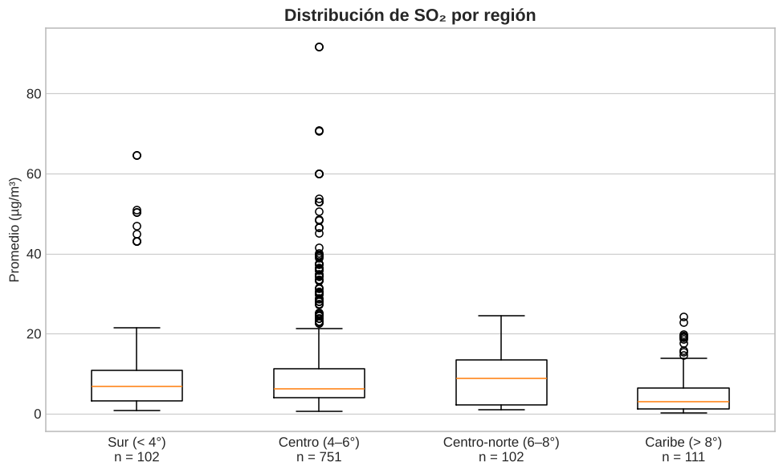
Interpretación
El SO₂ es más alto en el centro-norte (mediana de 8,8 µg/m³) y muy bajo en el Caribe (2,9 µg/m³). Los valores altos aparecen como puntos sueltos sobre las cajas y corresponden a pocas estaciones cerca de industrias.
tabla_cambio_so2 = cambio_porcentual(so2_anual, "Promedio_SO2")
tabla(tabla_cambio_so2, ["Periodo", "Promedio 2011", "Promedio 2024", "Cambio (%)"])
| Periodo | Promedio 2011 | Promedio 2024 | Cambio (%) |
|---|---|---|---|
| 2011-2024 | 15,14 | 9,86 | -34,84 |
Interpretación
Entre 2011 y 2024 el promedio nacional de SO₂ bajó 34,8 %, pero ese promedio depende de pocas estaciones industriales que entran y salen de la red.
Comparación del cambio porcentual de los contaminantes#
cambios = []
for nombre, dat in [("PM10", pm10_anual), ("PM2.5", pm25_anual), ("NO2", no2_anual), ("O3", o3_anual), ("SO2", so2_anual)]:
s = dat.set_index("Año").iloc[:, 0]
if 2011 in s.index and 2024 in s.index:
v1, v2 = s.loc[2011], s.loc[2024]
cambios.append({"Contaminante": nombre, "Promedio_2011": v1, "Promedio_2024": v2, "Cambio_porcentual": (v2 - v1) / v1 * 100})
comparacion_contaminantes = pd.DataFrame(cambios)
tabla(comparacion_contaminantes, ["Contaminante", "Promedio 2011", "Promedio 2024", "Cambio (%)"])
| Contaminante | Promedio 2011 | Promedio 2024 | Cambio (%) |
|---|---|---|---|
| PM10 | 42,66 | 30,83 | -27,75 |
| PM2.5 | 21,46 | 14,73 | -31,35 |
| NO2 | 36,28 | 26,88 | -25,90 |
| O3 | 23,94 | 27,29 | 14,00 |
| SO2 | 15,14 | 9,86 | -34,84 |
d = comparacion_contaminantes.sort_values("Cambio_porcentual")
fig, ax = plt.subplots()
ax.barh(d["Contaminante"], d["Cambio_porcentual"], color="#595959")
for y, v in zip(d["Contaminante"], d["Cambio_porcentual"]): ax.text(v * 1.03, y, f"{v:.1f}%", va="center", ha="right" if v < 0 else "left", fontsize=9)
ax.set_xlim(d["Cambio_porcentual"].min() * 1.15, d["Cambio_porcentual"].max() * 1.15)
ax.axvline(0, color="black", linewidth=0.8)
ax.set_title("Cambio porcentual de los principales contaminantes\nVariación del promedio entre 2011 y 2024", fontweight="bold")
ax.set_xlabel("Cambio porcentual (%)"); ax.set_ylabel("Contaminante"); ax.grid(axis="y", visible=False)
plt.tight_layout(); plt.show()
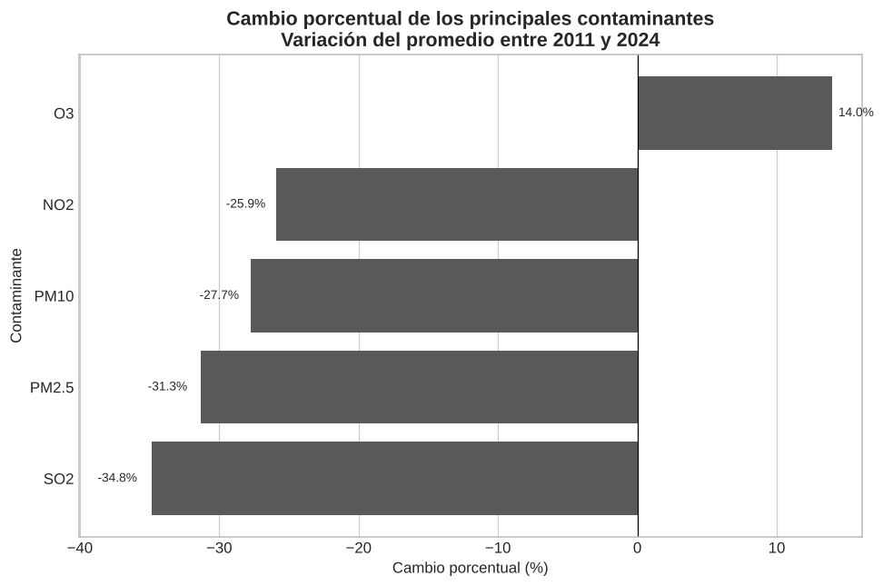
Interpretación
Cuatro de los cinco contaminantes bajaron entre 2011 y 2024. El material particulado bajó cerca de 30 % y el ozono subió 14 %.
1.7 Análisis de variables meteorológicas#
Temperatura del aire (TAire)#
taire = df[df["Variable"] == "TAire"].copy()
print("Registros de TAire:", len(taire))
estadistica_taire = estadisticos(taire["Promedio"])
tabla(estadistica_taire, ["Estadístico", "Valor"])
Registros de TAire: 73
| Estadístico | Valor |
|---|---|
| Mínimo | 13,40 |
| Primer cuartil | 20,60 |
| Mediana | 22,30 |
| Media | 22,62 |
| Tercer cuartil | 25,00 |
| Máximo | 33,50 |
taire_anual = promedio_anual(taire, "Promedio_TAire") # se usa para el cambio entre 2011 y 2024
tabla(resumen_region(taire), ["Región", "Registros", "Mediana", "Q1", "Q3", "Máximo"])
| Región | Registros | Mediana | Q1 | Q3 | Máximo |
|---|---|---|---|---|---|
| Centro (4–6°) | 22 | 24,50 | 22,57 | 25,08 | 25,50 |
| Centro-norte (6–8°) | 51 | 22,00 | 20,40 | 23,85 | 33,50 |
grafico_region(taire, "TAire", "°C")
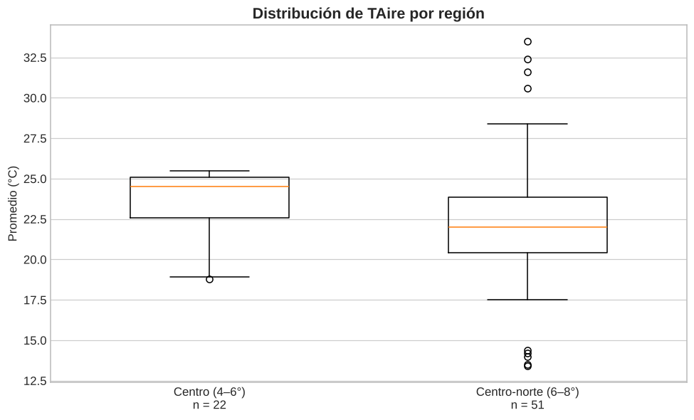
Interpretación
TAire solo tiene registros en el centro (22) y el centro-norte (51). Con 73 registros no se puede comparar entre regiones. TAire2 y TAire10 tienen 834 y 334 registros y sirven mejor para estudiar la temperatura.
Humedad relativa del aire (HAire)#
haire = df[df["Variable"] == "HAire"].copy()
print("Registros de HAire:", len(haire))
estadistica_haire = estadisticos(haire["Promedio"])
tabla(estadistica_haire, ["Estadístico", "Valor"])
Registros de HAire: 75
| Estadístico | Valor |
|---|---|
| Mínimo | 33,10 |
| Primer cuartil | 62,05 |
| Mediana | 71,80 |
| Media | 66,09 |
| Tercer cuartil | 76,35 |
| Máximo | 92,00 |
haire_anual = promedio_anual(haire, "Promedio_HAire") # se usa para el cambio entre 2011 y 2024
tabla(resumen_region(haire), ["Región", "Registros", "Mediana", "Q1", "Q3", "Máximo"])
| Región | Registros | Mediana | Q1 | Q3 | Máximo |
|---|---|---|---|---|---|
| Sur (< 4°) | 6 | 66,90 | 63,30 | 69,45 | 70,30 |
| Centro (4–6°) | 25 | 71,80 | 63,00 | 73,20 | 78,80 |
| Centro-norte (6–8°) | 44 | 73,60 | 44,75 | 79,55 | 92,00 |
grafico_region(haire, "HAire", "%")
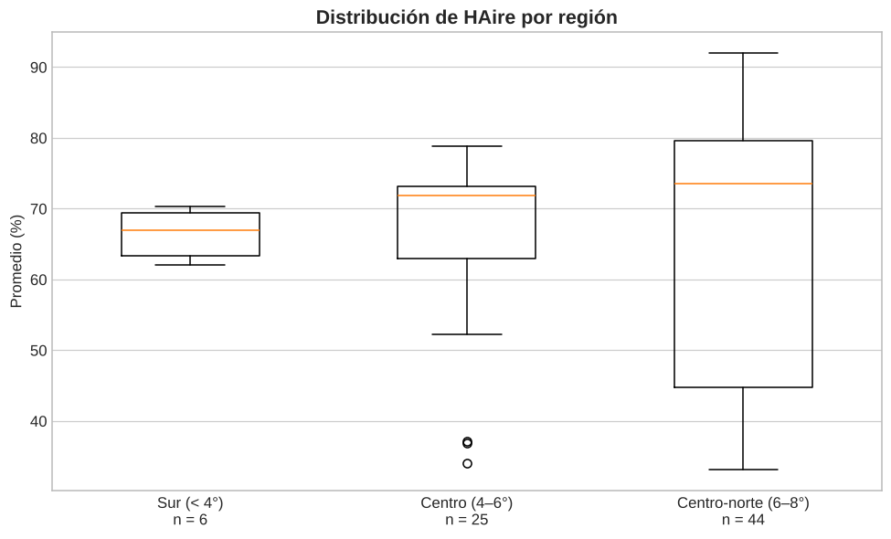
Interpretación
La humedad relativa tiene medianas entre 66,9 % (sur) y 73,6 % (centro-norte). No hay registros en el Caribe y el sur solo tiene 6.
Velocidad del viento (VViento)#
vviento = df[df["Variable"] == "VViento"].copy()
print("Registros de VViento:", len(vviento))
estadistica_vviento = estadisticos(vviento["Promedio"])
tabla(estadistica_vviento, ["Estadístico", "Valor"])
Registros de VViento: 1254
| Estadístico | Valor |
|---|---|
| Mínimo | 0,10 |
| Primer cuartil | 0,90 |
| Mediana | 1,20 |
| Media | 1,37 |
| Tercer cuartil | 1,70 |
| Máximo | 10,20 |
vviento_anual = promedio_anual(vviento, "Promedio_VViento") # se usa para el cambio entre 2011 y 2024
tabla(resumen_region(vviento), ["Región", "Registros", "Mediana", "Q1", "Q3", "Máximo"])
| Región | Registros | Mediana | Q1 | Q3 | Máximo |
|---|---|---|---|---|---|
| Sur (< 4°) | 130 | 1,20 | 0,80 | 1,60 | 3,30 |
| Centro (4–6°) | 383 | 1,40 | 1,00 | 1,90 | 9,00 |
| Centro-norte (6–8°) | 584 | 1,10 | 0,80 | 1,50 | 10,20 |
| Caribe (> 8°) | 157 | 1,20 | 0,90 | 2,20 | 5,50 |
grafico_region(vviento, "VViento", "m/s")
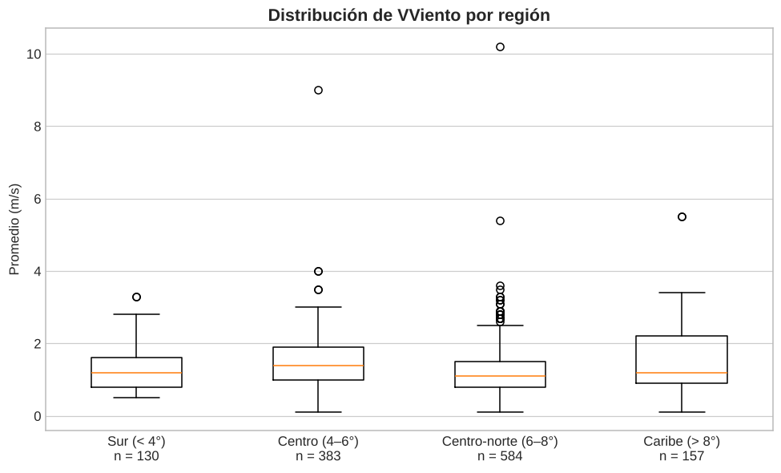
Interpretación
El viento es débil en todas las regiones, con medianas entre 1,1 y 1,4 m/s. El centro-norte tiene el valor más bajo (1,1 m/s) y también la mediana más alta de PM2.5. Con poco viento los contaminantes se dispersan menos.
Presión atmosférica (P)#
presion = df[df["Variable"] == "P"].copy()
print("Registros de P:", len(presion))
estadistica_presion = estadisticos(presion["Promedio"])
tabla(estadistica_presion, ["Estadístico", "Valor"])
Registros de P: 673
| Estadístico | Valor |
|---|---|
| Mínimo | 399,10 |
| Primer cuartil | 629,90 |
| Mediana | 677,60 |
| Media | 701,68 |
| Tercer cuartil | 755,50 |
| Máximo | 1.010,40 |
presion_anual = promedio_anual(presion, "Promedio_P") # se usa para el cambio entre 2011 y 2024
tabla(resumen_region(presion), ["Región", "Registros", "Mediana", "Q1", "Q3", "Máximo"])
| Región | Registros | Mediana | Q1 | Q3 | Máximo |
|---|---|---|---|---|---|
| Sur (< 4°) | 90 | 677,80 | 676,42 | 818,50 | 907,10 |
| Centro (4–6°) | 183 | 565,60 | 563,90 | 756,00 | 962,20 |
| Centro-norte (6–8°) | 294 | 639,80 | 632,48 | 683,30 | 865,70 |
| Caribe (> 8°) | 106 | 755,60 | 751,70 | 977,38 | 1.010,40 |
grafico_region(presion, "presión (P)", "mmHg")
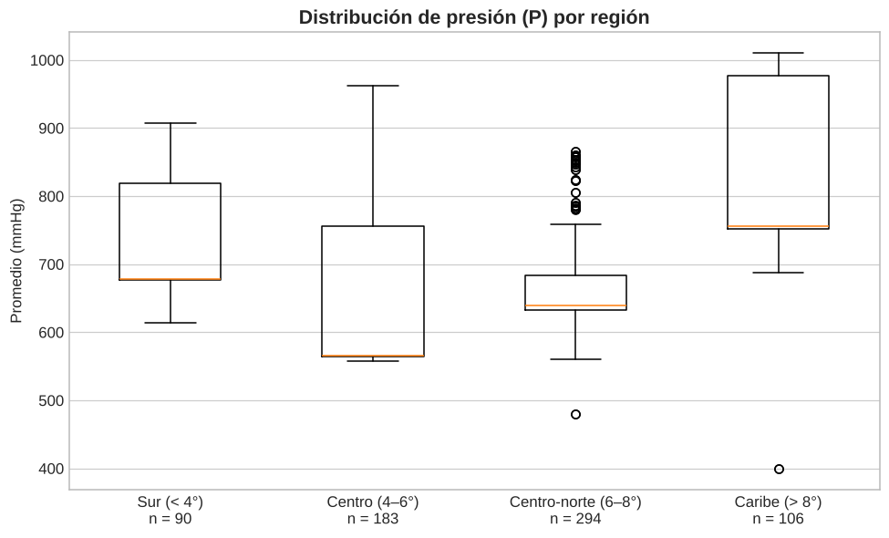
Interpretación
Las medianas de presión siguen la altitud: 565,6 mmHg en el centro (Bogotá está a unos 2.600 m) y 755,6 mmHg en el Caribe, casi a nivel del mar. Eso indica que la mayoría de los datos son correctos. Los puntos por encima de 800 mmHg no corresponden a ninguna altitud posible. La celda siguiente muestra de dónde salen.
sospechosos = presion[presion["Promedio"] > 800]
print("Registros de presión por encima de 800 mmHg:", len(sospechosos), "de", len(presion))
tabla(sospechosos["Nombre del Municipio"].value_counts().head(6).rename_axis("Municipio").reset_index(name="Registros"))
Registros de presión por encima de 800 mmHg: 108 de 673
| Municipio | Registros |
|---|---|
| CALI | 22 |
| VILLAVICENCIO | 18 |
| BARRANQUILLA | 18 |
| SANTA MARTA | 8 |
| MEDELLÍN | 8 |
| GIRARDOTA | 6 |
Precaución
Hay registros de más de 800 mmHg en Cali (22), Villavicencio (18) y Barranquilla (18). En Cali, a unos 1.000 m de altura, la presión real es de unos 680 mmHg, y ni siquiera a nivel del mar pasa de 760 mmHg. Los valores cercanos a 1.010 son hectopascales (hPa) marcados como mmHg. Esta variable no se puede usar sin corregir las unidades.
Precipitación líquida (PLiquida)#
pliquida = df[df["Variable"] == "PLiquida"].copy()
print("Registros de PLiquida:", len(pliquida))
estadistica_pliquida = estadisticos(pliquida["Promedio"])
tabla(estadistica_pliquida, ["Estadístico", "Valor"])
Registros de PLiquida: 927
| Estadístico | Valor |
|---|---|
| Mínimo | 0,10 |
| Primer cuartil | 0,20 |
| Mediana | 1,40 |
| Media | 9,77 |
| Tercer cuartil | 3,40 |
| Máximo | 3.236,70 |
pliquida_anual = promedio_anual(pliquida, "Promedio_PLiquida") # se usa para el cambio entre 2011 y 2024
tabla(resumen_region(pliquida), ["Región", "Registros", "Mediana", "Q1", "Q3", "Máximo"])
| Región | Registros | Mediana | Q1 | Q3 | Máximo |
|---|---|---|---|---|---|
| Sur (< 4°) | 115 | 2,30 | 0,25 | 5,80 | 422,50 |
| Centro (4–6°) | 331 | 1,20 | 0,10 | 2,70 | 49,10 |
| Centro-norte (6–8°) | 366 | 1,80 | 0,20 | 4,00 | 22,40 |
| Caribe (> 8°) | 115 | 1,50 | 0,55 | 3,85 | 3.236,70 |
grafico_region(pliquida, "PLiquida", "mm")
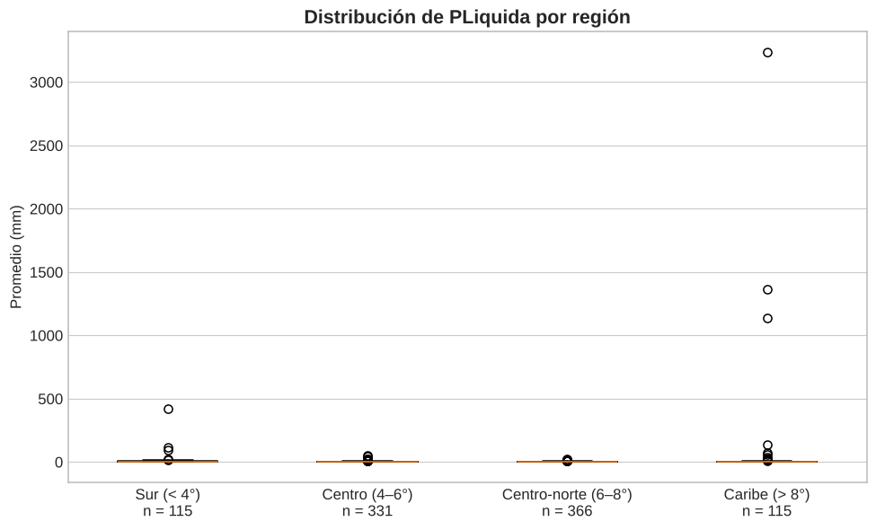
Interpretación
Las medianas de precipitación son bajas en todas las regiones, entre 1,2 y 2,3 mm, pero hay valores muy lejos de las cajas. Parecen acumulados reportados como promedio, por eso en esta variable se usa la mediana.
Radiación global (RGlobal)#
rglobal = df[df["Variable"] == "RGlobal"].copy()
print("Registros de RGlobal:", len(rglobal))
estadistica_rglobal = estadisticos(rglobal["Promedio"])
tabla(estadistica_rglobal, ["Estadístico", "Valor"])
Registros de RGlobal: 600
| Estadístico | Valor |
|---|---|
| Mínimo | 48,30 |
| Primer cuartil | 156,88 |
| Mediana | 178,45 |
| Media | 185,64 |
| Tercer cuartil | 206,40 |
| Máximo | 431,30 |
rglobal_anual = promedio_anual(rglobal, "Promedio_RGlobal") # se usa para el cambio entre 2011 y 2024
tabla(resumen_region(rglobal), ["Región", "Registros", "Mediana", "Q1", "Q3", "Máximo"])
| Región | Registros | Mediana | Q1 | Q3 | Máximo |
|---|---|---|---|---|---|
| Sur (< 4°) | 96 | 186,25 | 161,80 | 234,47 | 422,00 |
| Centro (4–6°) | 151 | 168,30 | 148,80 | 186,60 | 315,10 |
| Centro-norte (6–8°) | 271 | 178,20 | 158,50 | 193,10 | 415,40 |
| Caribe (> 8°) | 82 | 219,10 | 192,50 | 238,97 | 431,30 |
grafico_region(rglobal, "RGlobal", "W/m²")
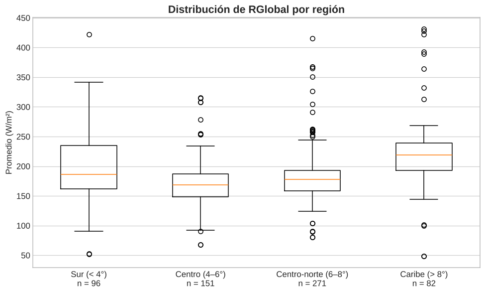
Interpretación
La radiación global es mayor en el Caribe (mediana de 219,1 W/m²) y menor en el centro (168,3 W/m²), donde hay más nubosidad.
Radiación ultravioleta B (RUVb)#
ruvb = df[df["Variable"] == "RUVb"].copy()
print("Registros de RUVb:", len(ruvb))
estadistica_ruvb = estadisticos(ruvb["Promedio"])
tabla(estadistica_ruvb, ["Estadístico", "Valor"])
Registros de RUVb: 66
| Estadístico | Valor |
|---|---|
| Mínimo | 0,60 |
| Primer cuartil | 1,90 |
| Mediana | 46,10 |
| Media | 112,40 |
| Tercer cuartil | 205,85 |
| Máximo | 303,80 |
ruvb_anual = promedio_anual(ruvb, "Promedio_RUVb") # se usa para el cambio entre 2011 y 2024
tabla(resumen_region(ruvb), ["Región", "Registros", "Mediana", "Q1", "Q3", "Máximo"])
| Región | Registros | Mediana | Q1 | Q3 | Máximo |
|---|---|---|---|---|---|
| Sur (< 4°) | 6 | 45,80 | 44,85 | 46,00 | 46,20 |
| Centro (4–6°) | 38 | 194,90 | 180,03 | 214,42 | 303,80 |
| Centro-norte (6–8°) | 20 | 1,95 | 1,70 | 2,00 | 4,00 |
| Caribe (> 8°) | 2 | 230,60 | 230,60 | 230,60 | 230,60 |
grafico_region(ruvb, "RUVb", "MED/h")
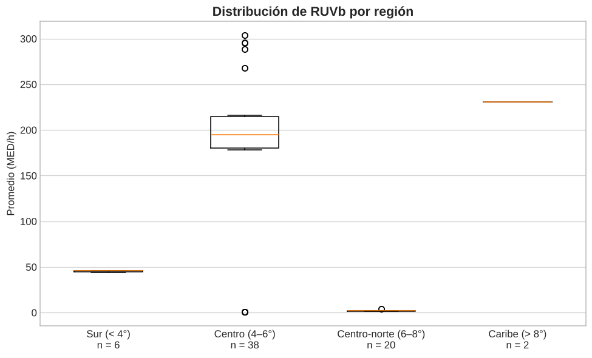
Interpretación
La RUVb tiene medianas muy distintas entre regiones, 1,9 en el centro-norte y 194,9 en el centro, que no tienen explicación física. La diferencia viene de las autoridades que reportan y de la escala que usa cada una, como se ve en la celda siguiente.
autoridades_ruvb = (ruvb.groupby("Año")["Autoridad Ambiental"].unique().apply(lambda a: ", ".join(sorted(a)))
.reset_index(name="Autoridades que reportan"))
tabla(autoridades_ruvb)
| Año | Autoridades que reportan |
|---|---|
| 2011 | SDA |
| 2012 | SDA |
| 2013 | SDA |
| 2014 | SDA |
| 2017 | CDMB |
| 2018 | CDMB |
| 2019 | CDMB, CORPOBOYACA, EPA BARRANQUILLA |
| 2020 | CDMB, CORPOBOYACA, CRC |
| 2021 | CDMB, CORPOBOYACA, CRC |
| 2022 | CORPOBOYACA, CRC |
Precaución
Hasta 2014 la RUVb solo la reportaba la SDA (Bogotá). Desde 2017 la reportan otras autoridades (CDMB, Corpoboyacá, CRC) con otra escala. Los dos periodos no se pueden comparar y cualquier correlación con RUVb sale afectada por este cambio.
1.8 Análisis de correlaciones#
Preparación de los datos#
datos_correlacion = (df.groupby(["Año", "Variable"], as_index=False)["Promedio"].mean()
.pivot(index="Año", columns="Variable", values="Promedio").reset_index().rename_axis(None, axis=1))
tabla(datos_correlacion[["Año", "PM10", "PM2.5", "NO2", "O3", "SO2", "TAire", "VViento", "P"]].head())
| Año | PM10 | PM2.5 | NO2 | O3 | SO2 | TAire | VViento | P |
|---|---|---|---|---|---|---|---|---|
| 2011 | 42,66 | 21,46 | 36,28 | 23,94 | 15,14 | 20,90 | 1,41 | 634,88 |
| 2012 | 44,60 | 23,88 | 31,77 | 27,55 | 11,26 | 21,97 | 1,56 | 636,12 |
| 2013 | 42,07 | 22,16 | 30,52 | 27,86 | 6,84 | 22,07 | 1,69 | 631,59 |
| 2014 | 43,64 | 21,48 | 24,85 | 29,01 | 5,92 | — | 1,60 | 639,33 |
| 2015 | 44,40 | 22,39 | 24,36 | 32,64 | 7,26 | — | 1,45 | 651,30 |
Interpretación
Para comparar variables que se miden en estaciones distintas se usa el promedio nacional de cada año. Así cada variable queda con 14 puntos como máximo, y algunas con menos (TAire 6, HAire 7). Por eso se usa Spearman, que trabaja con rangos y es menos sensible a un año con un valor extremo que Pearson.
Matriz de correlaciones#
variables_eda = ["PM10", "PM2.5", "NO2", "SO2", "O3", "TAire", "HAire", "VViento", "P", "PLiquida", "RGlobal", "RUVb"]
matriz_correlacion = datos_correlacion[[v for v in variables_eda if v in datos_correlacion.columns]].corr(method="spearman")
distancia = 1 - matriz_correlacion
orden = leaves_list(linkage(squareform(distancia.values, checks=False), method="complete"))
m = matriz_correlacion.iloc[orden, orden]
mascara = np.tril(np.ones(m.shape, dtype=bool))
fig, ax = plt.subplots(figsize=(9, 7.5))
sns.heatmap(m, mask=mascara, annot=True, fmt=".2f", annot_kws={"size": 8}, cmap="RdBu_r", vmin=-1, vmax=1, square=True, linewidths=0.5, cbar_kws={"shrink": 0.7}, ax=ax)
ax.set_title("Matriz de correlación de Spearman", fontweight="bold")
plt.xticks(rotation=45, ha="left"); ax.xaxis.tick_top()
plt.tight_layout(); plt.show()
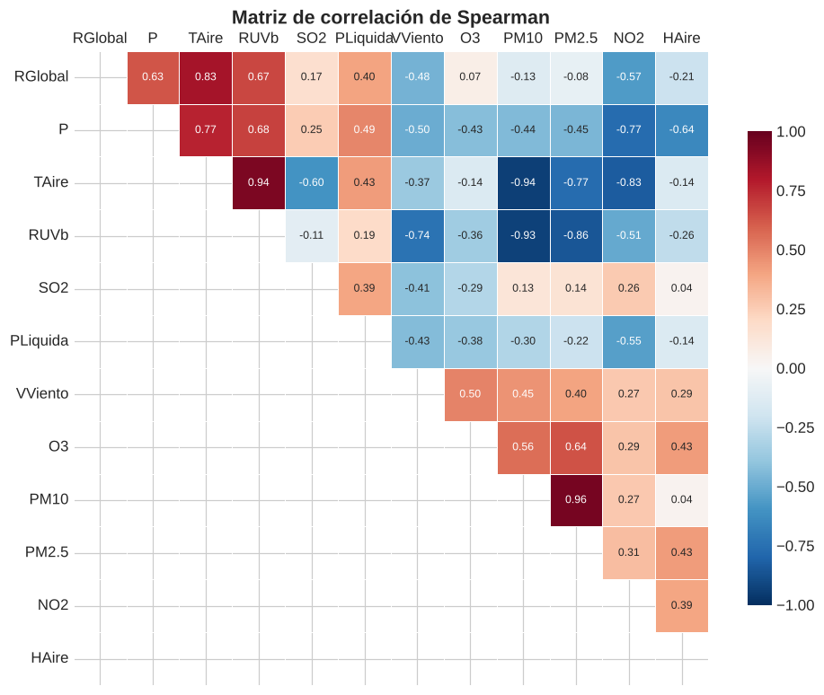
Interpretación
Con Spearman la matriz forma dos grupos. Uno con PM10, PM2.5, NO₂, O₃, viento y humedad, que se relacionan de forma positiva. Otro con radiación global, presión, temperatura y RUVb, que en general tiene relación negativa con los contaminantes.
PM10 y PM2.5: ρ = 0,96 con 14 años. Es la relación más confiable. El PM2.5 es parte del PM10 y los dos vienen de las mismas fuentes.
PM2.5 y O₃: ρ = 0,64 con 14 años, relación fuerte con la serie completa.
TAire con PM10 (ρ = −0,94) y con NO₂ (ρ = −0,83): tienen sentido físico porque con más temperatura el aire se mezcla mejor, pero TAire solo tiene 6 años.
RUVb con PM10 (−0,93) y con TAire (0,94), y NO₂ con P (−0,77): no se pueden usar por los problemas de RUVb y de la presión.
Una correlación alta no indica que una variable cause la otra.
Tabla de correlaciones y fuerza de asociación#
def fuerza(r):
a = abs(r)
if a >= 0.80: return "Muy fuerte"
elif a >= 0.60: return "Fuerte"
elif a >= 0.40: return "Moderada"
elif a >= 0.20: return "Débil"
else: return "Muy débil"
completos = datos_correlacion.select_dtypes("number").dropna()
m = completos.corr(method="spearman")
pares = [(a, b, m.loc[a, b]) for k, a in enumerate(m.columns) for b in m.columns[k + 1:]]
correlaciones_todas = pd.DataFrame(pares, columns=["Variable 1", "Variable 2", "Correlacion"])
correlaciones_todas["Fuerza"] = correlaciones_todas["Correlacion"].apply(fuerza)
orden_abs = correlaciones_todas["Correlacion"].abs().sort_values(ascending=False).index
correlaciones_todas = correlaciones_todas.loc[orden_abs].reset_index(drop=True)
print("Años con dato en todas las variables:", ", ".join(completos["Año"].astype(str)))
print("Pares con |ρ| ≥ 0,60:", (correlaciones_todas["Correlacion"].abs() >= 0.6).sum(), "de", len(correlaciones_todas))
Años con dato en todas las variables: 2011, 2012, 2013, 2017, 2018, 2019
Pares con |ρ| ≥ 0,60: 103 de 210
def color_corr(x):
if x >= 0.80: return "#81C784"
elif x >= 0.60: return "#A5D6A7"
elif x <= -0.80: return "#E57373"
elif x <= -0.60: return "#EF9A9A"
else: return "#E0E0E0"
fuertes = correlaciones_todas[correlaciones_todas["Correlacion"].abs() >= 0.6]
tabla(fuertes, ["Variable 1", "Variable 2", "ρ de Spearman", "Fuerza"]).map(
lambda v: "background-color: " + color_corr(v) + "; color: black", subset=["ρ de Spearman"])
| Variable 1 | Variable 2 | ρ de Spearman | Fuerza |
|---|---|---|---|
| Año | TAire | 1,00 | Muy fuerte |
| HAire2 | TAire2 | -1,00 | Muy fuerte |
| NO2 | RGlobal | -1,00 | Muy fuerte |
| Año | HAire2 | -0,94 | Muy fuerte |
| Año | PM10 | -0,94 | Muy fuerte |
| Año | TAire2 | 0,94 | Muy fuerte |
| NO | RGlobal | -0,94 | Muy fuerte |
| PM10 | TAire | -0,94 | Muy fuerte |
| CO | P | -0,94 | Muy fuerte |
| TAire | TAire2 | 0,94 | Muy fuerte |
| PM10 | PST | 0,94 | Muy fuerte |
| NO | TAire | -0,94 | Muy fuerte |
| NO | NO2 | 0,94 | Muy fuerte |
| NO | PST | 0,94 | Muy fuerte |
| PLiquida | VViento | -0,94 | Muy fuerte |
| HAire2 | TAire | -0,94 | Muy fuerte |
| Año | NO | -0,94 | Muy fuerte |
| Año | RUVb | 0,94 | Muy fuerte |
| RUVb | TAire | 0,94 | Muy fuerte |
| PM10 | RUVb | -0,94 | Muy fuerte |
| NO2 | PST | 0,89 | Muy fuerte |
| NO | PM10 | 0,89 | Muy fuerte |
| HAire2 | PM10 | 0,89 | Muy fuerte |
| Año | PST | -0,89 | Muy fuerte |
| PM10 | PM2.5 | 0,89 | Muy fuerte |
| PM10 | TAire2 | -0,89 | Muy fuerte |
| PST | RGlobal | -0,89 | Muy fuerte |
| PST | TAire | -0,89 | Muy fuerte |
| P | RUVb | 0,88 | Muy fuerte |
| PST | RUVb | -0,88 | Muy fuerte |
| PM2.5 | RUVb | -0,88 | Muy fuerte |
| NO | RUVb | -0,88 | Muy fuerte |
| RGlobal | TAire | 0,83 | Muy fuerte |
| NO | TAire2 | -0,83 | Muy fuerte |
| CO | HAire | 0,83 | Muy fuerte |
| P | PM2.5 | -0,83 | Muy fuerte |
| Año | NO2 | -0,83 | Muy fuerte |
| NO2 | TAire | -0,83 | Muy fuerte |
| HAire2 | NO | 0,83 | Muy fuerte |
| Año | RGlobal | 0,83 | Muy fuerte |
| RUVb | TAire2 | 0,82 | Muy fuerte |
| HAire2 | RUVb | -0,82 | Muy fuerte |
| HAire2 | PST | 0,77 | Fuerte |
| PM10 | RGlobal | -0,77 | Fuerte |
| P | TAire | 0,77 | Fuerte |
| PLiquida | PST | -0,77 | Fuerte |
| PM2.5 | PST | 0,77 | Fuerte |
| HAire2 | SO2 | 0,77 | Fuerte |
| NO2 | TAire10 | 0,77 | Fuerte |
| NO2 | PM10 | 0,77 | Fuerte |
| PST | TAire2 | -0,77 | Fuerte |
| CO | PM2.5 | 0,77 | Fuerte |
| Año | P | 0,77 | Fuerte |
| Año | PM2.5 | -0,77 | Fuerte |
| RGlobal | TAire10 | -0,77 | Fuerte |
| PM2.5 | TAire | -0,77 | Fuerte |
| SO2 | TAire2 | -0,77 | Fuerte |
| NO2 | RUVb | -0,76 | Fuerte |
| CO | RUVb | -0,76 | Fuerte |
| RGlobal | RUVb | 0,76 | Fuerte |
| O3 | PM2.5 | 0,71 | Fuerte |
| P | PM10 | -0,71 | Fuerte |
| HAire | O3 | 0,71 | Fuerte |
| DViento | P | 0,71 | Fuerte |
| DViento | RUVb | 0,70 | Fuerte |
| CO | TAire | -0,66 | Fuerte |
| PM2.5 | TAire2 | -0,66 | Fuerte |
| DViento | PM2.5 | -0,66 | Fuerte |
| CO | RGlobal | -0,66 | Fuerte |
| CO | O3 | 0,66 | Fuerte |
| CO | NO2 | 0,66 | Fuerte |
| HAire | P | -0,66 | Fuerte |
| Año | CO | -0,66 | Fuerte |
| HAire2 | PM2.5 | 0,66 | Fuerte |
| NO2 | PLiquida | -0,66 | Fuerte |
| NO2 | TAire2 | -0,66 | Fuerte |
| PST | VViento | 0,66 | Fuerte |
| RGlobal | TAire2 | 0,66 | Fuerte |
| SO2 | TAire10 | 0,66 | Fuerte |
| PLiquida | RGlobal | 0,66 | Fuerte |
| HAire2 | RGlobal | -0,66 | Fuerte |
| NO | PM2.5 | 0,66 | Fuerte |
| NO | P | -0,66 | Fuerte |
| HAire2 | NO2 | 0,66 | Fuerte |
| SO2 | TAire | -0,60 | Fuerte |
| P | PST | -0,60 | Fuerte |
| PLiquida | PM2.5 | -0,60 | Fuerte |
| PLiquida | PM10 | -0,60 | Fuerte |
| P | RGlobal | 0,60 | Fuerte |
| P | TAire2 | 0,60 | Fuerte |
| NO2 | P | -0,60 | Fuerte |
| RGlobal | VViento | -0,60 | Fuerte |
| PM2.5 | RGlobal | -0,60 | Fuerte |
| NO | TAire10 | 0,60 | Fuerte |
| NO2 | VViento | 0,60 | Fuerte |
| NO | PLiquida | -0,60 | Fuerte |
| HAire2 | P | -0,60 | Fuerte |
| O3 | P | -0,60 | Fuerte |
| Año | SO2 | -0,60 | Fuerte |
| NO2 | PM2.5 | 0,60 | Fuerte |
| CO | NO | 0,60 | Fuerte |
| HAire10 | NO | 0,60 | Fuerte |
| CO | PM10 | 0,60 | Fuerte |
Interpretación
Esta tabla usa .dropna() sobre todas las variables, así que solo quedan los años con dato en todas: 2011, 2012, 2013, 2017, 2018 y 2019. Se muestran los pares con |ρ| de 0,60 o más. Con solo 6 años los valores cambian frente a la matriz. Por ejemplo, PM10 y PM2.5 da 0,89 aquí y 0,96 en la matriz.
Las filas con Año muestran la tendencia: PM10 (−0,94), NO₂ (−0,83) y PM2.5 (−0,77) bajan con el tiempo, y P (0,77) y RGlobal (0,83) suben. En la presión es otra vez el problema de unidades.
1.9 Análisis de valores atípicos#
outliers_pm = pd.DataFrame({"Variable": ["PM10", "PM2.5"], "Q1": [pm10["Promedio"].quantile(0.25), pm25["Promedio"].quantile(0.25)], "Q3": [pm10["Promedio"].quantile(0.75), pm25["Promedio"].quantile(0.75)]})
outliers_pm["Rango_IQR"] = outliers_pm["Q3"] - outliers_pm["Q1"]
outliers_pm["Limite_inferior"] = outliers_pm["Q1"] - 1.5 * outliers_pm["Rango_IQR"]
outliers_pm["Limite_superior"] = outliers_pm["Q3"] + 1.5 * outliers_pm["Rango_IQR"]
tabla(outliers_pm, ["Variable", "Primer cuartil", "Tercer cuartil", "Rango IQR", "Límite inferior", "Límite superior"])
| Variable | Primer cuartil | Tercer cuartil | Rango IQR | Límite inferior | Límite superior |
|---|---|---|---|---|---|
| PM10 | 27,00 | 44,80 | 17,80 | 0,30 | 71,50 |
| PM2.5 | 12,50 | 19,80 | 7,30 | 1,55 | 30,75 |
Interpretación
Para PM10 los valores atípicos son los que pasan de 71,5 µg/m³ y para PM2.5 los que pasan de 30,75 µg/m³. Los límites inferiores salen negativos o casi cero, así que no hay atípicos bajos.
Valores atípicos de PM10#
fig, ax = plt.subplots(figsize=(6, 6))
ax.boxplot(pm10["Promedio"].dropna(), widths=0.4)
ax.set_title("Distribución y valores atípicos de PM10", fontweight="bold"); ax.set_ylabel("Concentración de PM10"); ax.set_xticks([])
plt.tight_layout(); plt.show()
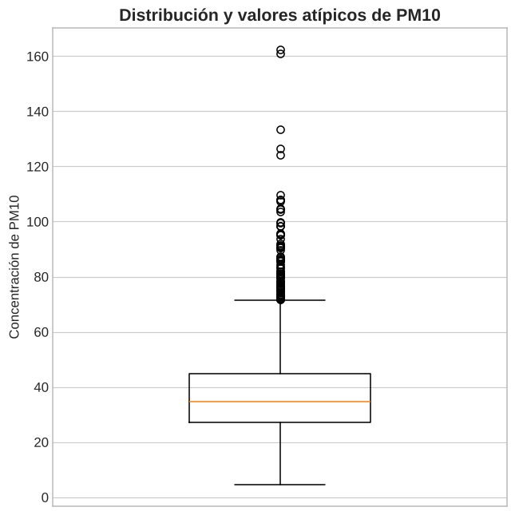
Interpretación
El PM10 tiene 91 atípicos (3,0 %), todos por encima de la caja. El más alto es la estación Bolivia de Bogotá, con 162 µg/m³ en 2012. También aparecen zonas industriales como Yumbo y Ráquira.
Valores atípicos de PM2.5#
fig, ax = plt.subplots(figsize=(6, 6))
ax.boxplot(pm25["Promedio"].dropna(), widths=0.4)
ax.set_title("Distribución y valores atípicos de PM2.5", fontweight="bold"); ax.set_ylabel("Concentración de PM2.5"); ax.set_xticks([])
plt.tight_layout(); plt.show()
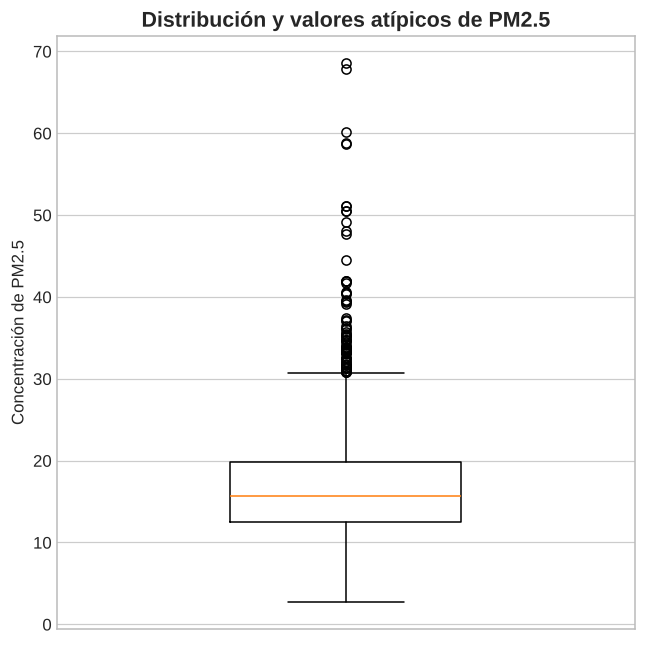
Interpretación
El PM2.5 tiene 74 atípicos (3,7 %), también solo valores altos, y se concentran en pocas estaciones.
Valores atípicos de variables meteorológicas#
meteorologicas = df[df["Variable"].isin(["TAire", "HAire", "VViento", "P", "PLiquida", "RGlobal", "RUVb"])]
outliers_meteorologicas = meteorologicas.groupby("Variable", as_index=False).agg(Q1=("Promedio", lambda s: s.quantile(0.25)), Q3=("Promedio", lambda s: s.quantile(0.75)))
outliers_meteorologicas["IQR"] = outliers_meteorologicas["Q3"] - outliers_meteorologicas["Q1"]
outliers_meteorologicas["Limite_inferior"] = outliers_meteorologicas["Q1"] - 1.5 * outliers_meteorologicas["IQR"]
outliers_meteorologicas["Limite_superior"] = outliers_meteorologicas["Q3"] + 1.5 * outliers_meteorologicas["IQR"]
tabla(outliers_meteorologicas, ["Variable", "Primer cuartil", "Tercer cuartil", "Rango IQR", "Límite inferior", "Límite superior"])
| Variable | Primer cuartil | Tercer cuartil | Rango IQR | Límite inferior | Límite superior |
|---|---|---|---|---|---|
| HAire | 62,05 | 76,35 | 14,30 | 40,60 | 97,80 |
| P | 629,90 | 755,50 | 125,60 | 441,50 | 943,90 |
| PLiquida | 0,20 | 3,40 | 3,20 | -4,60 | 8,20 |
| RGlobal | 156,88 | 206,40 | 49,53 | 82,59 | 280,69 |
| RUVb | 1,90 | 205,85 | 203,95 | -304,03 | 511,78 |
| TAire | 20,60 | 25,00 | 4,40 | 14,00 | 31,60 |
| VViento | 0,90 | 1,70 | 0,80 | -0,30 | 2,90 |
orden_met = sorted(meteorologicas["Variable"].unique())
fig, ax = plt.subplots()
ax.boxplot([meteorologicas.loc[meteorologicas["Variable"] == v, "Promedio"].dropna() for v in orden_met])
ax.set_xticks(range(1, len(orden_met) + 1))
ax.set_xticklabels(orden_met)
ax.set_title("Distribución y valores atípicos de las variables meteorológicas", fontweight="bold"); ax.set_xlabel("Variable meteorológica"); ax.set_ylabel("Valor registrado")
plt.xticks(rotation=45, ha="right")
plt.tight_layout(); plt.show()
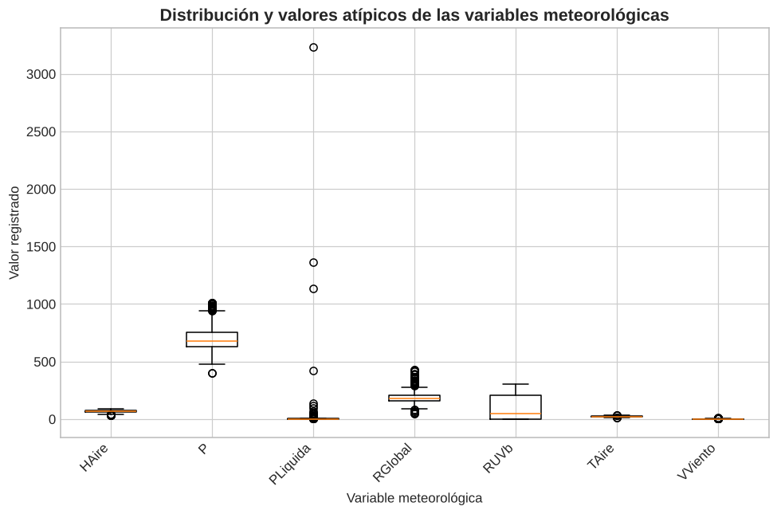
Interpretación
La presión tiene atípicos altos, que son los registros en hPa. La precipitación tiene valores muy lejos de la caja y el viento tiene pocos atípicos.
Los atípicos no se eliminan porque pueden ser episodios reales de contaminación. Solo se deben corregir los errores que se pueden demostrar, como la presión en hPa o la representatividad mayor a 100 %.
1.10 Resumen estadístico general#
variables_resumen = df[df["Variable"].isin(["PM10", "PM2.5", "SO2", "NO2", "O3", "TAire", "HAire", "VViento", "P", "PLiquida", "RGlobal", "RUVb"])].groupby("Variable", as_index=False).agg(N=("Promedio", "count"), Mínimo=("Promedio", "min"), Q1=("Promedio", lambda s: s.quantile(0.25)), Mediana=("Promedio", "median"), Media=("Promedio", "mean"), Q3=("Promedio", lambda s: s.quantile(0.75)), Máximo=("Promedio", "max"))
tabla(variables_resumen, ["Variable", "N", "Mínimo", "Q1", "Mediana", "Media", "Q3", "Máximo"])
| Variable | N | Mínimo | Q1 | Mediana | Media | Q3 | Máximo |
|---|---|---|---|---|---|---|---|
| HAire | 75 | 33,10 | 62,05 | 71,80 | 66,09 | 76,35 | 92,00 |
| NO2 | 644 | 0,50 | 16,50 | 26,00 | 26,46 | 35,60 | 65,60 |
| O3 | 827 | 2,00 | 19,80 | 25,70 | 26,15 | 31,80 | 65,80 |
| P | 673 | 399,10 | 629,90 | 677,60 | 701,68 | 755,50 | 1.010,40 |
| PLiquida | 927 | 0,10 | 0,20 | 1,40 | 9,77 | 3,40 | 3.236,70 |
| PM10 | 2984 | 4,60 | 27,00 | 34,60 | 37,13 | 44,80 | 162,30 |
| PM2.5 | 1984 | 2,70 | 12,50 | 15,70 | 16,84 | 19,80 | 68,60 |
| RGlobal | 600 | 48,30 | 156,88 | 178,45 | 185,64 | 206,40 | 431,30 |
| RUVb | 66 | 0,60 | 1,90 | 46,10 | 112,40 | 205,85 | 303,80 |
| SO2 | 1066 | 0,10 | 3,40 | 6,00 | 9,43 | 11,00 | 91,71 |
| TAire | 73 | 13,40 | 20,60 | 22,30 | 22,62 | 25,00 | 33,50 |
| VViento | 1254 | 0,10 | 0,90 | 1,20 | 1,37 | 1,70 | 10,20 |
Interpretación
La tabla junta en un solo lugar las estadísticas de las 12 variables principales.
1.11 Variables con problemas#
Estas son las variables o columnas que no se pueden usar tal como vienen en el archivo.
Variable |
Problema |
Causa probable |
Decisión |
|---|---|---|---|
P (presión) |
108 registros por encima de 800 mmHg, sobre todo en Cali, Villavicencio y Barranquilla |
Valores en hPa etiquetados como mmHg |
No usar sin convertir unidades |
RUVb |
Pasa de 0,6 (2011 a 2014) a valores de 130 a 180 desde 2019 |
Cambio de autoridad que reporta y de escala |
No es comparable, no se usa en correlaciones |
TAire |
73 registros en 6 años y 24 % de representatividad |
Pocas estaciones reportan sin altura |
Usar TAire2 o TAire10 |
HAire |
75 registros en 7 años y 27 % de representatividad |
Pocas estaciones reportan sin altura |
Usar HAire2 o HAire10 |
DViento |
El promedio aritmético de grados no tiene sentido físico |
Variable circular |
Requiere estadística circular |
PLiquida |
Media de 9,8 mm frente a mediana de 1,4 mm, máximo de 3.236,7 mm |
Acumulados reportados como promedios |
Usar la mediana |
Representatividad Temporal |
12 registros por encima de 100 % (máximo 167 %) |
Error de captura |
Se documenta, no se corrige |
Excedencias en registros de 1 h |
Máximos de 3.608 µg/m³ de PM2.5 sin excedencias |
No hay límite horario de PM2.5 en la norma |
Usar solo registros de 24 h |
Departamento y municipio |
49 nombres para 24 departamentos y 339 para 193 municipios |
Mayúsculas, minúsculas y tildes |
Normalizar los nombres |
1.12 Variable objetivo: excedencia diaria de PM2.5#
El modelo va a responder si una estación tendrá en el año al menos un día con PM2.5 por encima del límite diario de la Resolución 2254 de 2017. Primero hay que revisar qué mide la columna Excedencias limite actual en cada tiempo de exposición.
pm25["Excede"] = pm25["Excedencias limite actual"] > 0
verificacion = pm25.groupby("Tiempo de exposición (horas)").agg(
Registros=("Excede", "size"),
Porcentaje_que_excede=("Excede", lambda s: s.mean() * 100),
Maximo_sin_excedencia=("Máximo", lambda s: s[~pm25.loc[s.index, "Excede"]].max()),
).reset_index()
tabla(verificacion, ["Exposición (h)", "Registros", "% que excede", "Máximo sin excedencia (µg/m³)"], decimales=1)
| Exposición (h) | Registros | % que excede | Máximo sin excedencia (µg/m³) |
|---|---|---|---|
| 1 | 840 | 77,7 | 3.608,5 |
| 24 | 1144 | 47,9 | 50,2 |
Interpretación
En los registros de 24 horas ninguna estación sin excedencias pasa de 50,2 µg/m³, que coincide con el límite diario. En los de 1 hora hay estaciones con máximos de 3.608 µg/m³ que aparecen sin excedencias, porque la norma no tiene límite horario para PM2.5. Por eso la variable objetivo se arma solo con los registros de 24 horas.
pm25_24h = pm25[pm25["Tiempo de exposición (horas)"] == 24].copy()
pm25_24h["Excede"] = pm25_24h["Excede"].astype(int)
print("Registros:", len(pm25_24h), "| Estaciones:", pm25_24h["Estación"].nunique())
balance = pm25_24h["Excede"].value_counts().rename_axis("Excede").reset_index(name="Registros")
balance["Excede"] = balance["Excede"].map({0: "No", 1: "Sí"})
balance["Porcentaje"] = balance["Registros"] / balance["Registros"].sum() * 100
tabla(balance, ["Excede", "Registros", "Porcentaje (%)"], decimales=1)
Registros: 1144 | Estaciones: 383
| Excede | Registros | Porcentaje (%) |
|---|---|---|
| No | 596 | 52,1 |
| Sí | 548 | 47,9 |
Interpretación
La variable objetivo tiene 1.144 registros de 383 estaciones y el 47,9 % excede el límite. Las dos clases tienen casi el mismo tamaño, así que no hace falta sobremuestrear y se puede usar la exactitud junto con el AUC y el recall.
fig, ax = plt.subplots()
for valor, color, etiqueta in [(0, "#9e9e9e", "No excede"), (1, "#c62828", "Excede")]:
d = pm25_24h[pm25_24h["Excede"] == valor]
ax.scatter(d["Año"] + np.random.uniform(-0.25, 0.25, len(d)), d["Máximo"], s=12, alpha=0.6, color=color, label=etiqueta)
ax.step([2010.5, 2018.5, 2024.5], [50, 37, 37], where="post", color="black", linewidth=1.5, label="Límite diario (Res. 2254/2017)")
ax.set_ylim(0, 150); ax.set_xticks(range(2011, 2025))
ax.set_title("Máximo diario de PM2.5 y límite de la norma", fontweight="bold")
ax.set_xlabel("Año"); ax.set_ylabel("Máximo diario de PM2.5 (µg/m³)")
plt.xticks(rotation=45, ha="right"); ax.legend(loc="upper left"); plt.tight_layout(); plt.show()
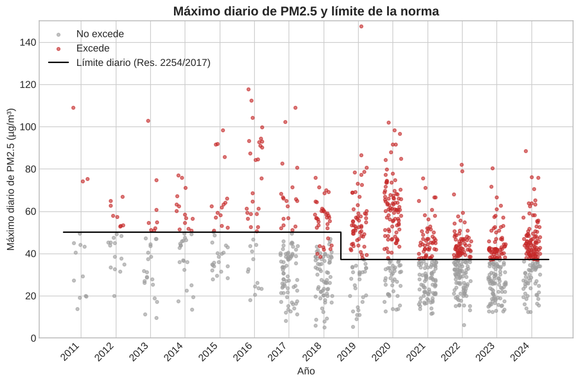
Interpretación
Los registros que exceden (rojo) quedan por encima de la línea del límite y los que no (gris) por debajo. El límite bajó de 50 a 37 µg/m³ a mediados de 2018, así que una misma concentración puede ser excedencia después de 2018 y no antes.
def barras_tasa(d, cat, titulo, xlab, subtitulo=None, alto=6, horizontal=True):
"""Barras con la tasa de excedencia. Etiqueta: número de registros arriba y (%) que excede debajo."""
fig, ax = plt.subplots(figsize=(9, alto))
etiquetas = [f"{n}\n({t:.0f} %)" for n, t in zip(d["n"], d["Tasa"])]
if horizontal:
d = d.sort_values("Tasa")
etiquetas = [f"{n}\n({t:.0f} %)" for n, t in zip(d["n"], d["Tasa"])]
ax.barh(d[cat].astype(str), d["Tasa"], color="#4a6572")
for y, t, e in zip(d[cat].astype(str), d["Tasa"], etiquetas):
ax.text(t + 1, y, e, va="center", fontsize=8, linespacing=0.95)
ax.set_xlim(0, 100); ax.set_xlabel(xlab); ax.grid(axis="y", visible=False)
else:
ax.bar(d[cat].astype(str), d["Tasa"], color="#4a6572")
for x, t, e in zip(d[cat].astype(str), d["Tasa"], etiquetas):
ax.text(x, t + 1.5, e, ha="center", fontsize=8, linespacing=0.95)
ax.set_ylim(0, 100); ax.set_ylabel(xlab); ax.grid(axis="x", visible=False)
plt.xticks(rotation=45, ha="right")
ax.set_title(titulo if subtitulo is None else titulo + "\n" + subtitulo, fontweight="bold")
plt.tight_layout(); plt.show()
por_anio = pm25_24h.groupby("Año").agg(Tasa=("Excede", lambda s: s.mean() * 100), n=("Excede", "size")).reset_index()
barras_tasa(por_anio, "Año", "Porcentaje de registros que exceden el límite por año", "Registros que exceden (%)",
subtitulo="Arriba: número de registros. Entre paréntesis: porcentaje que excede", horizontal=False)
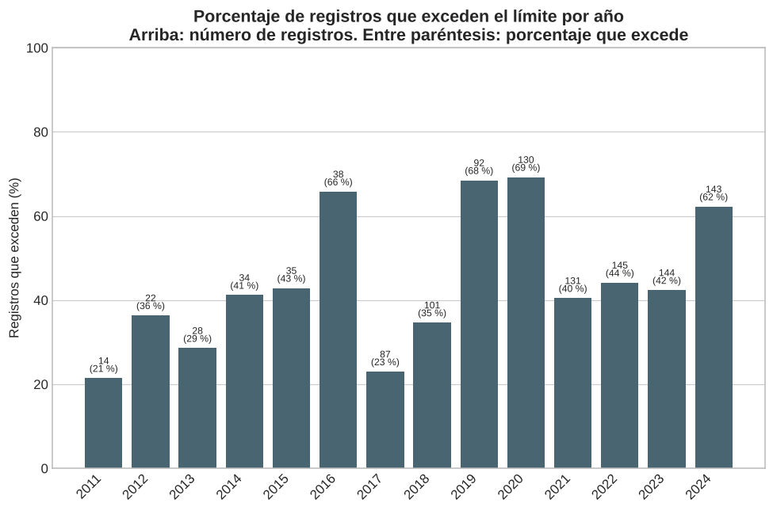
Interpretación
El porcentaje de excedencia no tiene una tendencia clara. Va de 21 % en 2011 (14 registros) a 69 % en 2020. Entre 2011 y 2016 hay pocos registros por año y en 2018 el límite se volvió más estricto, lo que complica la comparación. Aunque el promedio de PM2.5 bajó, los días con excedencia siguen siendo frecuentes.
por_tipo = pm25_24h.groupby("Tipo de Estación").agg(Tasa=("Excede", lambda s: s.mean() * 100), n=("Excede", "size")).reset_index()
tabla(por_tipo, ["Tipo de estación", "% que excede", "Registros"], decimales=1)
| Tipo de estación | % que excede | Registros |
|---|---|---|
| Fija | 52,4 | 987 |
| Indicativa | 19,7 | 157 |
Interpretación
Las estaciones fijas exceden mucho más (52 %) que las indicativas (20 %). Las fijas miden todo el año y suelen estar en zonas urbanas, mientras que las indicativas son campañas cortas con menos días para registrar una excedencia.
por_depto = pm25_24h.groupby("Departamento_norm").agg(Tasa=("Excede", lambda s: s.mean() * 100), n=("Excede", "size")).reset_index()
por_depto = por_depto[por_depto["n"] >= 20]
barras_tasa(por_depto, "Departamento_norm", "Porcentaje de registros que exceden el límite de PM2.5",
"Registros que exceden (%)", subtitulo="Departamentos con al menos 20 registros", alto=6)
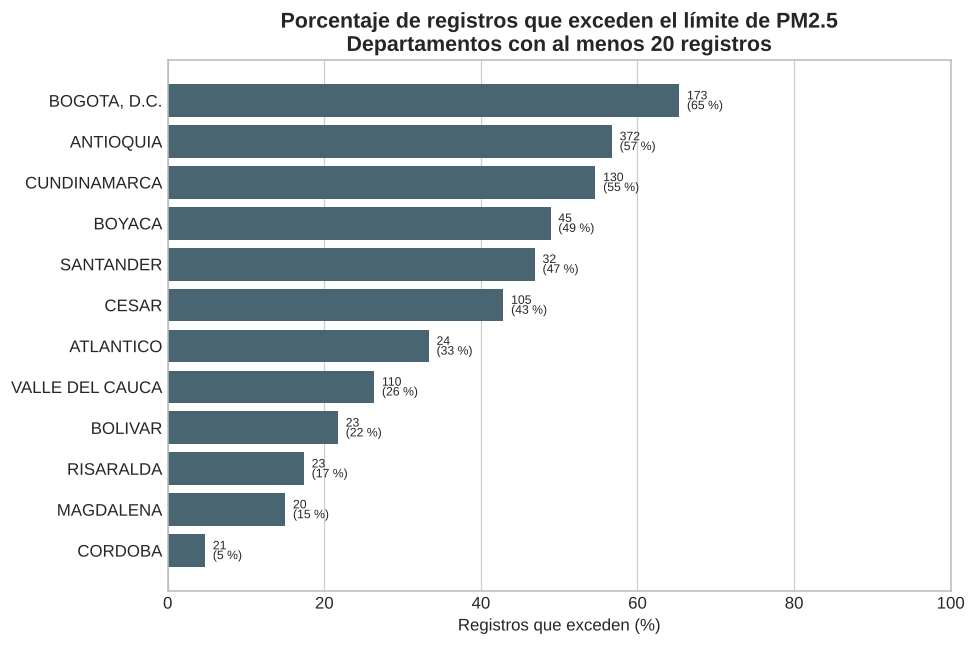
Interpretación
Bogotá (65 %), Antioquia (57 %) y Cundinamarca (55 %) exceden con frecuencia, mientras que Córdoba (5 %), Magdalena (15 %) y Bolívar (22 %) casi no. Las ciudades andinas están en valles o altiplanos donde hay inversiones térmicas y poco viento, y en la costa los vientos alisios ayudan a dispersar. La ubicación debería ser uno de los predictores más importantes.
estaciones = pm25_24h.groupby("Estación").agg(Latitud=("Latitud", "mean"), Longitud=("Longitud", "mean"),
Tasa=("Excede", "mean"), n=("Excede", "size")).reset_index()
estaciones["Tasa"] = estaciones["Tasa"] * 100
mapa_satelital(estaciones["Latitud"], estaciones["Longitud"], 7 + estaciones["n"] * 1.6,
estaciones["Estación"] + ": excede en " + estaciones["Tasa"].round(0).astype(int).astype(str) +
" % de " + estaciones["n"].astype(str) + " años",
"Estaciones de PM2.5 según el porcentaje de años con excedencia", color=estaciones["Tasa"],
escala=[[0, "#7fdcff"], [0.5, "#ffd23f"], [1, "#ff3b3b"]], titulo_barra="% de años")
Interpretación
Los puntos rojos se concentran en Bogotá y el Valle de Aburrá, y los azules en el Caribe y el suroccidente. El tamaño del punto indica cuántos años reportó la estación.
pm25_24h["Cuartil_datos"] = pd.qcut(pm25_24h["No. de datos"], 4, labels=["Q1 (menos días)", "Q2", "Q3", "Q4 (más días)"])
esfuerzo = pm25_24h.groupby("Cuartil_datos", observed=True).agg(
Dias_medidos=("No. de datos", "median"), Tasa=("Excede", lambda s: s.mean() * 100), n=("Excede", "size")).reset_index()
tabla(esfuerzo, ["Cuartil de días medidos", "Mediana de días medidos", "% que excede", "Registros"], decimales=1)
| Cuartil de días medidos | Mediana de días medidos | % que excede | Registros |
|---|---|---|---|
| Q1 (menos días) | 42,0 | 21,1 | 289 |
| Q2 | 121,0 | 38,2 | 283 |
| Q3 | 304,0 | 53,5 | 286 |
| Q4 (más días) | 355,0 | 79,0 | 286 |
Interpretación
Las estaciones que midieron pocos días (Q1, mediana de 42 días) exceden en el 21 % de los casos y las que midieron casi todo el año (Q4) en el 79 %. Entre más días se mide, más fácil es captar al menos un día malo.
Precaución
La variable objetivo depende de cuántos días se midió y no solo de la calidad del aire. El modelo tiene que incluir No. de datos o la representatividad como variable de control. Si no, va a confundir una estación que mide mucho con una estación contaminada.
fig, ax = plt.subplots(figsize=(6, 5))
ax.boxplot([pm25_24h.loc[pm25_24h["Excede"] == 0, "Promedio"], pm25_24h.loc[pm25_24h["Excede"] == 1, "Promedio"]],
widths=0.5)
ax.set_xticks([1, 2], [f"No excede\nn = {(pm25_24h.Excede == 0).sum()}", f"Excede\nn = {(pm25_24h.Excede == 1).sum()}"])
ax.set_title("Promedio anual de PM2.5 según excedencia", fontweight="bold")
ax.set_ylabel("Promedio anual de PM2.5 (µg/m³)"); plt.tight_layout(); plt.show()
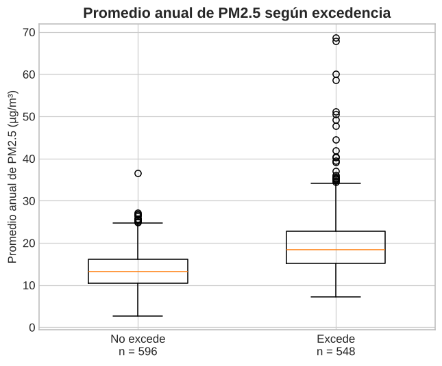
Interpretación
Las estaciones que exceden tienen un promedio anual más alto (mediana de 18,4 frente a 13,1 µg/m³), pero las cajas se cruzan. Hay estaciones con promedio bajo que igual tienen días críticos, así que el promedio solo no alcanza para saber si habrá excedencias.
Precaución
El promedio, la mediana, el percentil 98, el máximo, los días de excedencia y el porcentaje de excedencias del PM2.5 se calculan con las mismas mediciones que definen la excedencia. Si se usan como predictores el modelo hace trampa (fuga de información o data leakage).
Predictores candidatos para el modelo#
Variable |
Uso |
Razón |
|---|---|---|
Latitud, longitud, departamento |
Incluir |
Diferencia clara entre la región andina y el Caribe |
Tipo de estación |
Incluir |
Fijas 52 % e indicativas 20 % |
No. de datos, representatividad |
Incluir como control |
Controlan cuántos días se midió |
Año |
Incluir |
Recoge el cambio de límite en 2018 y los cambios de la red |
Autoridad ambiental |
Evaluar |
Puede repetir la información de ubicación |
Promedio, mediana, P98, máximo y días de excedencia de PM2.5 |
Excluir |
Fuga de información |
Meteorología de la misma estación |
Evaluar |
Solo cerca del 30 % de las estaciones la mide |
Interpretación
Con estos predictores se hizo una prueba rápida con un bosque aleatorio, separando las estaciones de entrenamiento y de prueba, y el AUC fue de 0,81. El problema se puede modelar. En la siguiente etapa hay que comparar algoritmos, ajustar hiperparámetros y ver si la meteorología ayuda.